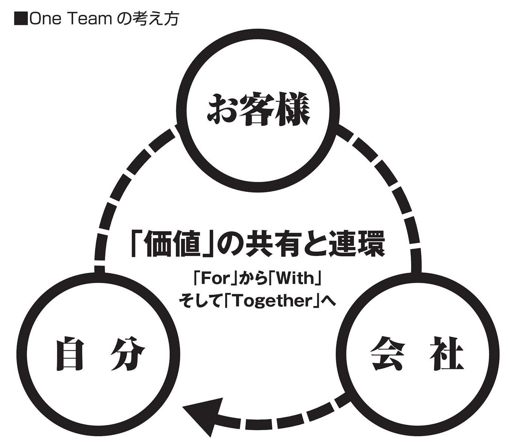
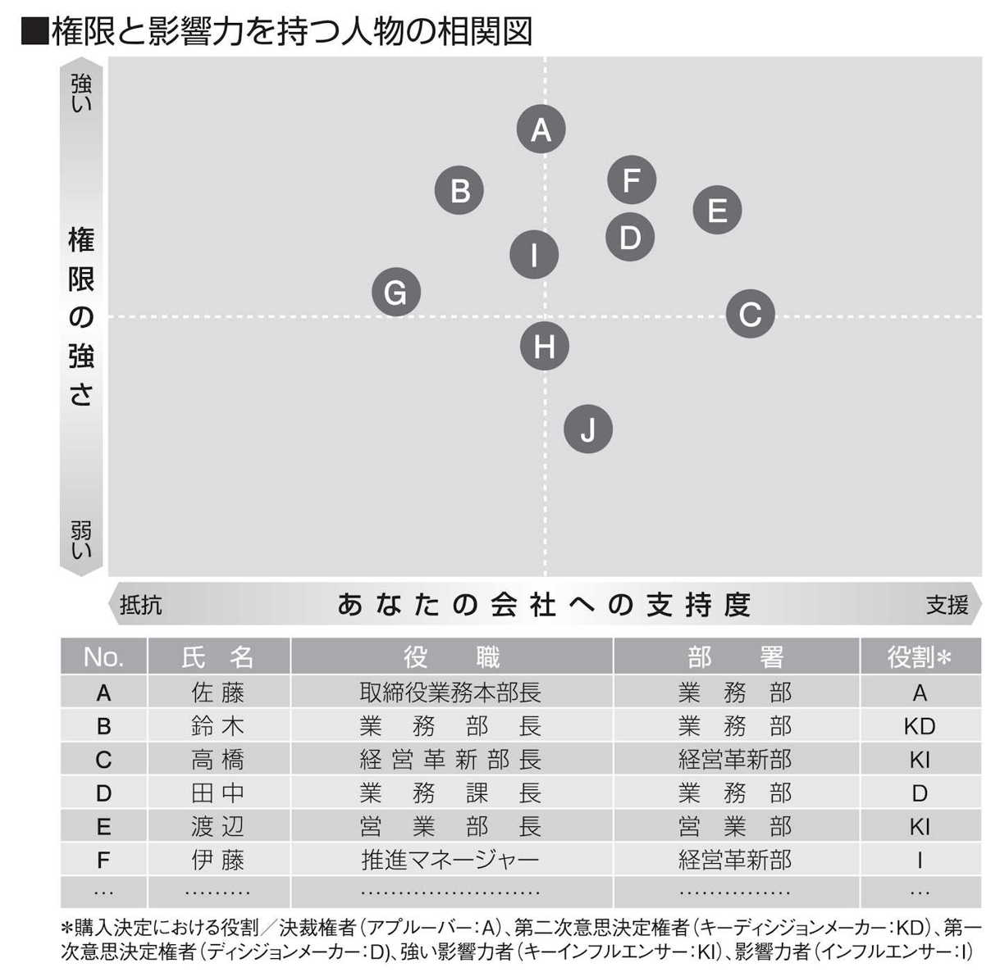

| 外資系の交渉術―――思いとおりの結果を得る６つのメソッド | |
| 岩城徹也 | |
| 株式会社こう書房 (2014) | |
●本作品は、一部ページを除き、縦書きでレイアウトされています。
●また、ご覧になるリーディングシステムにより、表示の差が認められることがあります。
皆さんは、いままでに「もっと交渉が上手くできたらいいな」と思ったことや、「交渉が成立したあとも、相手と長続きする関係がつくれたらいいな」と感じたことは、ありませんか。
もし、一度でもそのように感じたことがあれば、この本を読んでみてください。
この本には、あなたが交渉上手になり、相手といい関係を長く続けられるノウハウがわかりやすく詰め込んであります。
かくいう私自身は、交渉が大の苦手でした。交渉どころか相手とまともに面と向かって話すことさえ苦痛でした。
何しろ、人前に出ると赤面し、司会などの仕事はすべて断わり、会議では何も発言できずにただ座っている......ついたあだ名は「無口君」です。
そんな私でも、長く外資系企業に勤めることができ、セールスマネージャーや社内営業研修の講師まで務められたのは、私なりの考えや工夫を実践したからです。
その考え方やノウハウの多くは私が勤めてきた外資系企業での学びからくるものですが、そのなかから私なりに体系化してわかりやすくしたものが本書の内容です。
交渉と言うと、いわゆる「駆け引き」的なものを想像される方が多いかもしれませんが（そのような部分も一部含んでおりますが）、ここで紹介する多くは、相手の心理をつかみ、長きにわたって相手と良好な関係を続ける方法です。
少し極端な言い方をすれば、「信頼関係」さえあれば交渉は極めて高い確率で成立することでしょう。
しかしながら、この「信頼関係」をつくることが実は容易ではなく、誤った手法をとってしまい、信頼を失っている人が多くいるのも事実です。
信頼関係は、相手と同じ世界で物事を見て、相手の気持ちに共感し、相手の望ましい「未来の理想的な姿」を一緒に見ることによって得られるのです。
相手の望ましい姿を知るには、こちらから質問していかなければなりません。質問をしていくことで必要な情報が相手から入ります。
情報が入れば、相手のニーズや課題が見えてきます。ニーズや課題が見えてきたらそこではじめて提案ができる状態になります。
ところが、厄介なことに人は自分自身のニーズには気づいていない場合が多いのです。忙しい現代のビジネスマンは、未来どころか日々の業務への対応や処理に追われているのが現実です。
だからこそ、相手のニーズを気づかせてあげれば、相手から感謝されるのです。ニーズを気づかせる手法には本書で紹介する「質問技法」がとても有効となります。
質問によって、日々の現実から一歩離れて未来の理想的な姿を描かせてもらった相手は、自分自身の本当のニーズを見つけることができます。
自分が気づいていなかったものを気づかせてくれた相手、すなわち、あなたには共感と信頼感を寄せるようになります。
ニーズもわかり、信頼も得られたところで、いよいよ提案となるわけですが、残念ながらここでも誤った提案のスタイルをとる人が多くいます。
人の最大の関心事は「自分のこと」です。すなわち、「自分にとって利益のあることなのか否か」が一番気になることなのです。
したがって、あなたが交渉に臨むなら「相手の利益」を考えることが、交渉を成功させる上で不可欠な要素となるでしょう。
このようなプロセスを踏むことで、あなたは相手と強い信頼関係で結ばれ、交渉もお互いにハッピーな気分で成立するわけです。
皆さんが、営業職であれ、事務職であれ、あるいは仕事を離れて私生活の場面であれ、業種、職種、立場を問わずに人とかかわる以上は「交渉」が必要です。
１人でも多くの人が、交渉を自分が望む結果へと導き、かつ周囲とも良好な関係を築くことで、幸せな人生を歩まれることを心からお祈りします。
２０１４年６月
岩城徹也
タフな商談を必ず勝ち取る外資系の交渉術 もくじ
表面上はみな笑顔だが、裏では驚くような駆け引きが......
クロージングのハードルを下げるＳＰＩＮ質問技法が叩き込まれる
価格から意識を逸らす「Winning Prize」というずるいテクニック
第３章
価格交渉を避けるには「未来の理想的な姿」を意識させる
第４章
相手に勝たせて自分も勝つために「傾聴」で情報収集する
第５章
質問技法を駆使し相手にみずからの「ニーズ」を気づかせる
不作為によるトータルコストといま解決する一時的コストを比較する
ほとんどの人は「特徴」や「利点」を「利益」だと勘違いしている
気がついたら相手がクロージングしていた「いったん沈黙」の法則
皆さんは、外資系企業で生き残る最大の武器は英語力であると思っていませんか。
それも巷でよく言われるようなＴＯＥＩＣ７００点以上が必要だとか、８００点以上が必要だとか。
たしかに外資系企業で働く上では、英語力は必要条件となるでしょう。しかし、ここが重要な点なのですが、英語力は決して最大の武器とはなりません。実際に、ＴＯＥＩＣのスコアが社内で話題になったり、評価の対象になることは、ほとんどありません。
実際に、私自身は１つの外資系企業に17年半、もう１つの外資系企業に４年半、都合22年間も勤めましたが、私のＴＯＥＩＣスコアは３００点台です。ＴＯＥＩＣのスコアで言えば、外資系どころか日系企業でも話にならないレベルと言えるでしょう。
そんな私でも、なぜ長きにわたり外資系企業に勤められたのか。それはズバリ「交渉力」にほかなりません。交渉力は外資系企業に勤める人間にとって、もっとも欠かすことのできないスキルであると断言できます。
では、なぜ「交渉力」なのでしょうか。それは、外資系企業の性格にあります。経営者と社員すべての間に、あるいは彼らが従事する日々の仕事すべてに根付く考えに「契約」があるからです。
この契約という概念は、採用審査時にいきなり自分自身にふりかかってきます。これまでに何をやってきたかを会社に伝えることも必要ですが、それ以上に、この会社で何ができるか、会社が要求するレベルに対してどこまでできるかを伝えることが必要なのです。
入社後に求められるレベルを達成、またはそれを上回る結果を残せば、勤務年数や年齢に関係なく高い評価やインセンティブ（報酬）、昇進が与えられます。逆に求められるレベルに達しなければ与えられるものはなし。もし、不幸にも大きく下回ってしまえば降格や異動、さらには退職にまで追い込まれる結果が待っているのです。
外資系企業では、日系企業のように卒業したばかりの学生を採用して、ゼロから教え育てる考え方はありません。即戦力しか採用しませんので、戦力になるかどうか、なっているかどうかを常にシビアに判断するのです。
このため、会社側の求めていることに対して自分がどのレベルまで達成できるかを、具体的に数値でコミットメント（約束）する上司との面談が、毎年必ずあります。ここで約束したことを守れなければ約束違反、つまり契約違反と判断され、容赦ない評価が下ります。
したがって、常に「会社と自分との間で、仕事を遂行する上での約束事を交わす」意識を持たねばならず、また、それを実践していくことが必要になるのです。
前項で、約束事を大きく上回れば高い評価・昇進などが与えられることを述べましたが、具体的にどのような形で与えられるかを説明していきましょう。
まずインセンティブですが、これは通常のボーナスとは別に与えられ、営業部員のそれは、特に大きなものになっています。
金銭面での報酬は、企業の方針や達成度合いによって幅はありますが、ある営業部門では、そこに所属する半数以上の営業部員が通常の給料と同じくらいの金額を毎月のようにもらい続けていました。
１年間もらい続ければけっこうな金額になり、高級外車を購入する者や、住宅購入の頭金などにする者もいました。なかには頭金にとどまらず、住宅購入金額全額に充てた強者もいたほどです。
インセンティブは、金銭で与えられることが通常ですが、金銭に加えて海外施設見学と称した海外旅行も定番としてあります。
通常、外資系企業は世界中にネットワークを広げていますから、海外、特に総本部のある国やリージョン（世界を地域ごとに分けた際の地域の本部）のある国の設備やオフィスの規模は日本のそれとは比べものにならないほどで、目を見張るレベルであることが普通です。
こういった巨大なオフィス規模や最先端の設備を見ることで、仮に日本では小さなオフィスで働いていたとしても「自分は、なんて凄い会社で働いているんだ！」と感動すら覚え、モチベーションが高まっていくのです。
実際、私も15年ほど前、当時勤めていた国際貨物輸送会社のベルギーにある本部オフィスとハブと呼ばれる自社専用拠点空港の施設を見学したときには圧倒された記憶があります。
日本では見ることのできない自社機、大型トレーラー、仕分け機器、そこで働く人の多さ、綺麗で広く洗練されたオフィスを見て心が躍ったものです。
また、往復の飛行機ではビジネスクラスを利用できたり、現地では表彰式のようなセレモニーがあったり、パーティーでは家族同伴が許されるなど、徹底的にヒーロー、ヒロインに祭り上げられます。これは実際、非常に気分のよいものです。
もちろん、このような成績優秀者には人事考課上も高い評価が与えられ、グレードと呼ばれる等級が上がっていき、マネージャーやリーダーなどのポジションが与えられていくのも常です。
成果が大きければ与えられる報酬もそれだけ大きくなります。そこには年齢も社歴も関係ないのです。
先にも述べましたが、英語力のない私がなぜ外資系企業で長く働き続けられ、出世もできたかを、ここで「交渉術の６つのメソッド」として紹介したいと思います。
◆メソッド１：交渉の環境を整備するための「信頼関係」を構築する
究極の話をすれば、細かな交渉力を気にせずとも、「信頼」さえ勝ち取ってしまえば交渉は成功します。では、信頼を勝ち取るにはどうすればいいのでしょうか。その１つに「ＡＢＣの法則」があります。ＡＢＣの法則はのちの章で説明します。
◆メソッド２：価格交渉を避けるには「未来の理想的な姿」を意識させる
目先の言葉に惑わされると、交渉は価格面など相手の有利な条件のもとに進められてしまいます。また、相手も本当のニーズに気づいていませんから、相手はすぐに浮気をしてしまいます。相手の「ビジョン」を知り、それを共有し、同じイメージを描くことが必要です。
◆メソッド３：相手に勝たせて自分も勝つために「傾聴」で情報収集する
口下手な人の最大の武器は、会話の「聞き側」にまわれることです。人間誰しも自分自身のことが最大の関心事です。自分の話を聞いてくれる人には、感謝と好意の念を抱くのは自然です。しかしそこは、「聞き側」ではなく「聴き側」である必要があるのです
◆メソッド４：質問技法を駆使し相手にみずからの「ニーズ」を気づかせる
こちらの疑問点を解決するための質問だけでは相手は退屈するばかり。交渉の決め手となる質問は、相手にとって有益で価値のある質問です。その質問は「示唆質問」と呼ばれ、相手に本当のニーズを気づかせることができるのです。
◆メソッド５：交渉が勝手にまとまる「利益」を説明する
多くの人は交渉の際、こちら側の「特徴」や「利点」を一所懸命に説明しようとします。しかし、これらはやればやるほど逆効果で、相手の心は離れる一方です。相手の心にもっとも響くもの、それは「利益」です。「利益」の説明をするのです。
◆メソッド６：クロージング前の「提案」ではしゃべりすぎない
相手のニーズもわかり、いざ「提案」という段階になったとき、ここぞとばかりにあれもこれもと交渉品目を並べ立てる人がいますが、これでは一向に相手に響きません。焦点を分散させず、１点に絞って訴えることで相手に響かせることができるのです。
皆さんのなかには、交渉の場で自分の思いが相手に伝わらず、相手に言いくるめられて悔しい思いをされた方も多いかと思います。
私自身の体験として、いまでも忘れられない悔しい思い出があります。それはまだ、社会人になってから２～３年目のことでした。
あるアパレルブランドショップにシャツ１着だけ買うつもりで行ったのですが、結局、買わされたのはシャツ５着、スーツ２着、スーツとセット以外のスラックス３着（うち２着はまったく同じもの）、ベルト２本という大量さでした。
私が「買わされた」と思っている理由は、ショップ店員の巧みな話術に、私は自分の意見をほとんど言えず、終始店員のペースで、気がついたら「買わなくてよかった」と明らかに思う大量買いをさせられてしまったからです。
その巧みな話術とは以下のようなものでした。まず、２年間に予想される洋服の購入費を言わせられ、それに対し「どうせそのくらいの費用を払う気があるなら、いまここで一気に買ってしまったほうが何度もショップに足を運ぶ必要がなく手っ取り早くてよい」と独自の理論展開。あとは勝手にチョイスされた品物が次々と目の前に並べられていくのでした。
まったく同じスラックスを２着も買わされたのは「お気に入りで頻繁に履くスラックスなら、痛みやすいから替えがあったほうがよい」という理由です。
いま思えばおかしな理屈です。そもそも２年の間には流行や嗜好が変わることもあるはず。その時々に買いたいと思うものが出てくるはずです。
ではなぜ、このようなことが起きてしまうのでしょうか。それは、当時の私のように、反論できない人間につけこむのが「交渉の成功」と思い込んでいる人がいるからです。
残念ながら、相手に反論の余地を与えず、強引に一方的に買わせるやり方では、成功するのは10人に１人か１００人に１人でしょう。
しかも、そのように強引な交渉で「買わされた」と思った人とは、継続した取引（来店）は望めません。
自分の提案によって、相手が「買わされた」と思い購入するのではなく、自分の質問によって、相手が相手自身のニーズに気づき、「買いたい」とみずから思って購入する形を自然とつくることが大切です。
なぜなら、取引とは１回きりのものではなく、長きにわたり続いていくものだからです。だからこそ自分の意志で購入を決めたと感じてもらう形に持っていくのです。「買わされた」と感じさせたら、その関係は終わりです。以降のつきあいはなくなります。
現にあれ以来、私はあのショップに足を運んでいません。これからも二度と行くことはないでしょう。その店員に対しては嫌な感情しか残っておらず、足を運ぶ気になれないのです。
これがこのショップにとって本当に得なのかどうか、もうおわかりだと思います。
交渉はこちら側に買ってほしいものがあった場合でも、相手にそれを「買いたい」と思わせることが重要なのです。
相手が気づいていなかったみずからのニーズに気づかせてあげてこそ、感謝されながら、相手は買ってくれることになるのです。
相手を言いくるめようとする必要はまったくありません。あなたは、相手のニーズを気づかせることで、感謝されながら買ってくれる喜びを味わえるのです。
外資系企業での働き方をひと言で表わすとすれば、それは「『個人』が自立心を持って働く」ということです。
どこの外資系企業も会社は社員を守ってくれません。体力がなくなったら終わり、能力が発揮できなくなったら終わりです。その後の再就職紹介などあるはずもなく、まさに使い捨てです。会社は何もしてくれません。
「組織の体裁はとっているが、中身は個人事業主の集まり」。それが外資系なのです。名刺の肩書を見てもコーディネーター、アナリスト、スペシャリストなど、外部の人からは一見どんな仕事だかわからない職種名が多く、実際、社内の人ですら、その担当者の職務内容がよくわからないことも珍しくありません。
各人が会社から求められた専門的な仕事をしていることになり、各々非常に高いプライドを持っているのです。マネージャー職で入社してくるとなれば、その意識はさらに高いものになります。
このような専門的な仕事で、在籍中に少しでも自分が有利になるような実績を上げ、さらによい条件の会社へ転職していく。それが外資系で働く人の基本的な考え方なのです。
とはいえ、チームで仕事にあたっている人にとってチームワークの意識はもちろんあります。ただし、この場合のチームワークには「仲良し、助け合い」という意味合いはなく、あくまで１つの目標に向かって各人が与えられた役割に対してプロフェッショナルとして仕事をする姿勢を指します。そこには、弱い者を助ける風土はありません。
また、外資系では他人に弱みを見せてはいけないという認識が色濃くあります。たとえチームのなかでも弱みを見せれば能力のない者と見なされ、チームメンバーから他の人とのトレード希望の声が上がってきます。その人のせいでチームパフォーマンスが低くなれば、自分の評価も下がると考えるからです。
自分とかかわりのある相手が、敵か味方か。自分にとって益があるか害があるか。常に相手の力を探っているのです。味方であり、益があるなら手を組み、そうでない場合は蹴落とす。そうしなければ、自分が生き残れなくなるのです。
もともと年功序列や終身雇用のない外資系では各人が生き残りをかけて必死に自分のパフォーマンスを上げることを考えながら、虎視眈々と周囲の人間に勝つことを念頭に置いて仕事をします。
表面上では大人のビジネス社会として友好的に接していても、内心では相手に隙を見せまいと武装状態で仕事をしているのです。
外資系企業の労使関係には「契約」の考え方が色濃くあり、その文化には、常に「コミット」が意識づけられています。
そのため、一般社員もマネージャーも、期が始まる前には必ず、職務上の目標達成レベルに対するコミットを会社と交わします。
目標については、「Specific（具体的に）」「Measurable（計測可能で）」「Achievable（達成可能な）」「Realistic（現実的で）」「Time based（期限の設定）」の項目に沿ってつくられていなければなりません。各々の頭文字をとって「ＳＭＡＲＴ」の定義と呼ばれます。
このＳＭＡＲＴの定義に沿っていなければ、何回でもやり直しをさせられるので、目標をつくる側としては、安易にはできないとてもシビアな作業になります。
風呂敷を広げすぎてもダメ、目標サイズが小さすぎてもダメ、そのさじ加減がとても難しく、相手を納得させるまで綿密な根拠となる材料も揃えておく必要があるのです。
一般社員にとっては、この目標設定に対しての達成結果が、効果・査定に反映されるので、上司と部下の攻防はとてもシビアで、ときには激しく口論となることすらあります。
マネージャー職になれば、一般社員よりもシビアな目標設定が要求され、さらに自分自身の進退もかかっているため、より綿密にならざるを得ません。
低めの目標設定であれば消極的姿勢と判断され、やり直しとともに厳しい評価が下され、高すぎれば自分の首を絞める死活問題となるのです。
いったん設定した目標はコミットですから、どんなことがあっても必ず達成しなければなりません。上方修正されることはあっても下方修正されることは絶対にないのです。
かつて私が勤めていた会社の営業部では、６つの営業チームのマネージャーが話し合いのもと、営業部全体の年間販売予算を各チームへ振り分け、各チームの販売予算を決定する作業を行なっていました。
このときは、凄まじい人間模様が繰り広げられ、互いの性格、駆け引きの巧拙、人間の器などを痛切に感じたものです。
外資系企業の交渉術研修というと、鋭く計算された駆け引きを教わると想像される方が多いのではないでしょうか。
もちろん、駆け引き的な研修もあり、営業部員は最初にそれを受けさせられますが、実際の研修でもっとも多いのは、タイプ別診断、異文化コミュニケーション、質問技法、プレゼンテーションなど、相手の心理を理解しながら進めるコミュニケーション系になります。
当然のことながら、外資系企業では異なった国籍、価値観、経験などを持つ社員が世界中から集まってきており、彼らを統率するにはコミュニケーションが最大の課題となるからです。
この前提から習得したコミュニケーションスキルは、上司・部下間、他の部署間、チーム内、お客様相手、取引先相手......と幅広く通用することになります。
階層別、テーマ別はもちろんのこと、キャンペーンなどのイベントの際には、それに合わせた対応をとれるようにするための研修が行なわれます。
ＤｉＳＣ、ＳＰＩＮ、コーチング、など世界中のあらゆる業種で採用されている手法や考え方のよいところを集め、独自の研修プログラムに合わせたものをつくり上げるので、実に合理的なものになっています。
すでに世界中で取り入れられ定評のあるものですから、そのレベルは高いものであり、さらに自分たちの事業や業務に関係のないものは削ぎ落とされていますから無駄がないのです。
特に、営業部門で近年重視されてきた傾向として、従来の駆け引き型の交渉から相手の立場を重んじ相手の心理を理解しながら進める手法へと移行してきています。
交渉によって相手を打ち負かすのではなく、良好な関係を築きながら心理面に作用して相手がみずからの意思で商品やサービスを利用するよう導く交渉術が基本的な考え方となります。
もちろん相手があっての交渉術ですから、知識の取得だけではなく実践を積んでいかなければ習得はできません。
そのため、営業マネージャーやリーダーは、常に営業スタッフとロールプレイングによる練習を積み重ね、営業同行による実践体験とアドバイスをすることになります。
交渉においてはＷｉｎ‐Ｗｉｎの考え方がかつて流行りました。いや、いまでもこの考え方は多くの人に認められています。
Ｗｉｎ‐Ｗｉｎは、自分と相手が双方に利益を享受するという考え方ですが、この考え方ですと、登場人物が自分と相手の２人に限られてしまい現実にそぐわない場合が出てきます。
どうしても、「相手のために何かを与えるから、見返りに何かを自分にも与えろ」というギブ・アンド・テイクの考えと混同されやすいのです（Ｗｉｎ‐Ｗｉｎには本来、その考え方はありません）。
そこで注目され出したのが、「Ｏｎｅ Ｔｅａｍ」という考え方です。Ｏｎｅ Ｔｅａｍは、誰かのためにという考え方はありません。
また、自分と相手という２人だけの関係ではなく、そこに少なくとももう１人の第三者が加わり、【左図】のように循環した三角形を構成します。【左図】は会社と自分とお客様の関係を表わしたものです。

この図は、会社員である自分が価値（給料などの対価）をもらうには、その支払いもとであるお客様に価値を提供することで、お客様が会社に価値（商品代金や利用料など）を提供し、会社が潤って元気になり、それが巡り巡って自分に返ってくるという概念を表わしています。
自分が会社から給料をたくさんもらおうと考えるならば、会社が給料をたくさん支払えるように、儲かっている状態になっていなければなりません。
会社が儲かっている状態になるということは、お客様がたくさん会社の商品を買ったり、サービスを利用したりする必要があります。
お客様に会社の商品を買ってもらったり、サービスを利用してもらうためには、自分がお客様に対して買ってもらうよう交渉しなければなりません。
つまり、自分が会社からたくさんの給料をもらおうと思えば、あなたはお客様と交渉をして、会社の商品を買ってもらうようすることが必要なのです。
ただし、ここで重要なのは「買う」意思はあくまでお客様の決断だということです。そのためにお客様にとっての利益を真剣に考える必要があるのです。
お客様が商品を買うだけの財力がなかったり、買って不幸になってしまっては、取引の成立も継続も望めません。
ですから、お客様への交渉の内容は、「買うことによってお客様自身が元気になったり豊かになったりするようなもの」である必要があります。
もし、直接的に価値を与えてくれる人（つまり会社）だけを見ているとしたら、すぐに自分に価値が与えられなかった場合、非常に不満感を抱くことになります。
自分が相手に与えた価値の見返りを、どうしても相手に求めてしまうからです。「せっかく一所懸命に○○のために○○したのに......」という感覚です。
直接価値を与えてくれる人のその先にいる人を意識して働きかけることによって、時間はかかっても巡り巡って自分のもとへ価値が返ってくるという発想を持つことが交渉の成功には必要なのです。
交渉事で皆さんが一番悩まれるところがクロージング（交渉成立を確認する行為）ではないでしょうか。実際、私もクロージングは苦手でしたし、クロージングが苦手という人は周囲にも多かったと記憶しています。
たしかにクロージングは大事ですが、クロージングを意識しなくても効果的に交渉を進めることができる画期的な手法があります。
「ＳＰＩＮ（スピン）」と「ＦＡＢ（ファブ）」と呼ばれる手法であり、外資系企業の営業では広く使われています。ＳＰＩＮは４つの質問から、ＦＡＢは３つの提案から構成され、各々の英語の頭文字を取ってＳＰＩＮとＦＡＢと呼ばれます。
ＳＰＩＮは、極端に言えば相手がみずからクロージングをしてくれるクロージング下手には画期的な手法です。
それでは具体的に「４つの質問」を説明していきましょう。
◆状況質問（Situation Questions）
状況に関する質問。自分から見て相手の不明な点や疑問点を聞く質問。
例えば「従業員数は何人ですか？」「本社の場所はどこですか？」など、相手の状況を聞く質問です。この質問は必要最小限の頻度に抑える必要があります。なぜなら相手にとってはわかりきっている事実を答えるだけなので退屈極まりないからです。
◆問題質問（Problem Questions）
問題に関する質問。現状に対して問題はないかを質問して相手に語らせる質問。
例えば「いまお使いの機種で故障などは起きていませんか？」「いまお使いのサービスに満足されていますか？」など、相手の問題を語ってもらう質問です。この質問は、状況質問に比べると相手に与えるインパクトは大きくなります。小型の商談ではこの質問は効果大です。しかし、大型の商談では、次の示唆質問が有効です。
◆示唆質問（Implication Questions）
暗黙のニーズを引き出す質問。潜在していたニーズを引き出し、小さな問題を大きな深刻な問題として相手に気づかせる質問。
例えば「いまお使いの機器の処理時間だと、残業代が増えてしまうことになりませんか？」「もし24時間のうち一定時間連絡がつかなかったら、御社のお取引様には不満が出ませんか？」など、相手の潜在ニーズを引き出して、相手に気づかせる質問です。この質問はもっとも難しいのですが、効果は絶大です。気づいていなかったものに気づかせてくれた相手に、人は感謝の意を持ちます。
◆解決質問（Need pay off Questions）
ニーズの成果に関する質問。問題点を解決した場合の価値について認めさせる質問。
例えば「いまお使いの機器の処理速度が２倍になったら、業務効率が上がり、残業代も減ることになりませんか？」「もし窓口が24時間対応になれば、繋がらないクレームが減るので、御社のクライアント様の満足度が向上しませんか？」など、相手の問題に対する解決策を提示する質問です。この質問により、示唆質問で気づかせた相手の潜在ニーズに対してトドメを刺します。解決策の提示ですが、質問の形をとり、相手に「イエス」の言及を促します。
以上４つの質問を経て、相手が自分のなかに眠っていた潜在ニーズに気づき、解決策を認識できたこの段階においてはじめて、提案のプロセスに移ることが許されるのです。
交渉に失敗する人、未熟な人は、このプロセスを経ないで提案に移ってしまいます。それだと、相手がみずからのニーズにまだ気づいていないため、あなたの提案に興味が持てないのです。
次に、提案について３つの種類がありますので、順を追って説明します。
◆特徴（Feature）
商品やサービスの特徴を述べるもので、相手に与えるインパクトは小さく、すぐに印象は薄れていきます。
例えば「弊社のカスタマーサービスは24時間３６５日稼働しています」というもので、単に特徴だけを述べています。言い過ぎると逆効果にもなります。
◆利点（Advantage）
競合他社との違いを述べるもので、特徴よりは相手に与えるインパクトは大きくなりますが、時間が経過するにつれて、印象は薄まっていきます。
例えば「弊社のカスタマーサービスは24時間３６５日稼働していますので、他社が繋がらない時間帯でもいつでも時間を気にすることなく繋がります」というものです。
◆利益（Benefit）
相手にとって利益をもたらすもので、与えるインパクトはもっとも大きく、時間が経過しても印象は薄まりません。
例えば「弊社のカスタマーサービスは24時間３６５日稼働ですから、時間を気にすることなくいつでも繋がります。したがいまして、24時間対応を迫られる御社のお取引様からの満足度向上が実現できます」というものです。利益の効果については第６章で詳しく触れていきます。
交渉の際、嫌なものの１つに価格値上げ交渉があげられるのではないでしょうか。実際、毎年値上げを行なう会社に勤めていた私としては嫌な思い出でした。
競争激化の現代において、既存顧客に対して利用価格の値上げ交渉は、失敗すれば取引の停止、成功しても嫌味の１つも言われるというお互いに気持ちのよいものではありません。
値上げ交渉でなくても、新規取引開始の際の価格交渉も非常に神経を使う部分であり、慎重にならざるを得ないものです。
値上げ交渉で、まず真っ先に思い浮かぶのは「大義名分」を使うことでしょう。主には原材料費や人件費の高騰があげられます。
ただし、「大義名分」を使ったとしても、競合他社が条件据えおきの場合には非常に苦しい交渉を余儀なくされることでしょう。
このような価格交渉に有効であったのが「Winning Prize」という考え方でした。簡単に言えば、価格以外のものに焦点と関心を移し、価格交渉を成立させるというものです。
失敗する人の値上げ交渉は、交渉の最初から価格面を話題の中心に据えてしまうため、相手の頭のなかを価格のことでいっぱいにしてしまいます。
相手が抵抗しているにもかかわらず、受け入れてもらいたい一心で、最後はすがりつくようにお願いモードに入る人がいますが、これは最悪のケースです。
お願いモードによって無理矢理値上げを飲んだ相手は、あなたに貸しをつくった感覚が残っているので、その後の他の交渉事があなたにとって不利な形で進んでしまいます。
無理に頭を下げず、値上げのようなやりにくい価格交渉を成立させるには、価格以外のところに焦点を移し、相手の関心をそちらに寄せてもらうようにするのです。
もちろん、価格から関心を移すといっても、まったく商談と関係のない話題ではダメです。あくまで相手にとって商談上価値のあるものでなければなりません。
例えば「海外設備拡大のための投資によるサービスの向上」や「ＩＴシステム改修による貨物追跡調査精度の向上」などです。投資額などがわかっていて、実際に動き出す、あるいは計画中のものがあればそれを説明すればよいのです。その際は、ある程度、先を見据えた取り組みであることを強調します。
値上げ交渉というと、どうしても視点は「いま現在」に行きがちです。それゆえ、将来を見据え「御社のためにカスタマーサービスの専任者設置を検討している」「営業部門内での御社に対するサポート体制を強化する」などと強調するのです。
これらは、いますぐに適用する必要はなく、その一方で相手のことを特別に考えている意向を感じ取ってもらえます。相手の視点を長期に移すことと相手を特別視することによって、現在の問題から目を逸らせ、自然と納得させることができるのです。
「24：２」。この数字が何を表わしているかご存知ですか？
これは、イギリスの元首相・サッチャーさんが、かつて来日の際に日本人識者たちとの討論会におけるある数字でした。
「24」はサッチャーさんが「Because（なぜならば）」を使用した回数。「２」は日本人識者の回数。この討論会はサッチャーさんの圧勝でした。
外資系企業勤務時代、実際に海外スタッフのプレゼンを聞くと、この「なぜならば」が頻繁に使用されていることがわかります。
論理の展開においては、「○○に関しては、○○だから、○○なのである、そのため○○が必要だ」というように、「○○だから」の部分が重要となります。
説明が論理的でない場合には「ロジックがなっていない！」と一蹴されることがあるので、日ごろから論理的に説明する癖をつけておかなければなりませんでした。
外資系企業で生き残るためにはプレゼン技術は必須であり、特に重視すべきは「数字・事実・論理」でした。
目標を立てる際はＳＭＡＲＴの定義に沿っていなければならないことは先に触れましたが、相手を説得するプレゼンでも同じです。
数字が入っていない曖昧な言葉は、人によって解釈が違ってくるので、社内プレゼンではことごとく不備を指摘されます。
いつまでに何をどれくらい行なうのか、各々数字を使って表わさないと、相手を説得することはできないのです。
会議やプレゼンの場で自分の理論を展開するには、事実に基づく必要があります。これを欠くと「ファクト（事実）に基づいて話せ！」と鋭く指摘されます。
思いつきの推論や、あてずっぽう的な内容ではことごとく却下され、その後も「プレゼン技術の低い人」というレッテルが貼られてしまいます。
自分の意見を言う前に、しっかりと事実、特に数字関係を把握しておく必要があります。会議やプレゼンに臨むには事前に十分な準備が必要なのです。
そして、事実と数字に基づき、しっかりとロジック（論理）を展開する。これが外資系では当たり前なのです。「数字・事実・論理」に基づいて説明できる人間が「プレゼン上手」として評価されるのです。
人は少しでも信頼している人から買います。
このことを身をもって知らされたのが、私が15年ほど前、担当顧客の入札時に落札寸前で負けたことでした。
当時そのお客様は、既存の輸送形態を全面的に見直すことから、輸送コンサルティング会社を入れて、新しい輸送システムを構築するプロジェクトの公開入札を実施しました。
普通、入札といえば１回で落札が決まる、いわゆる一発勝負なわけですが、この入札は入札日までに何度も応札業者がお客様に対して料金も含めたさまざまな提案ができるというものでした。
当時の私たちの提案内容は、それまでお客様が利用していた日系企業ではできない画期的なシステムと輸送所要日数の短縮を実現させる内容だったこともあり、お客様もほぼ利用決定の意思を示していました。
輸送コンサルティング会社が入札を取り仕切ることになったのですが、そのコンサルティング会社とも関係を深めて仲良くなり、こっそりと他社の提示条件（特に料金面）を聞き出すということまでやっていました。
この仕事が決まれば「全社内で近年最高額の売上となる仕事だ！」と、心も踊っていたのですが、知らされた結果は落選。しかも落札したのはそのお客様がいままで利用していた輸送会社だったのです。
納得がいかなかった私は、お客様になぜその輸送会社を選んだのか理由を聞いてみました。しかし、その理由を聞いて愕然としてしまったのです。
理由は、いままで利用していた輸送会社とは10年以上の長いつきあいであり、契約を切ることができなかったというのです。
この話はいくつかの教訓を私に与えてくれました。もちろん、勝てると踏んでいた私の詰めの甘さがあるわけですが、それ以上に足りなかったものは「信頼」でした。
長くつきあっているということは、それだけお互い相手のことを熟知しており、良くも悪くも理解し合っているということです。
彼らは、この公開入札によって、互いに反省点や改善点を見つけて、いままで以上の結束を約束することになったのでした。
提案内容では圧倒的に優位に立っていたのですが、交渉においては「信頼」がかくも大きな要因になるという教訓でした。
いまや日系企業でも終身雇用のスタイルが失われてきていますが、外資系企業ではもとからそのような考え方がありません。
また、外資系企業で働く人たちから見ても、終身雇用されるという意識がありません。短期間で激しく人の出入りがあるのが常態となっています。
そのため、ある日突然、隣の席に見知らぬ人が座っていることも珍しくはないのです。即戦力しか採用しませんから、見た目や行動・言動は、社歴の長い人と変わりません。
外資系にはゼロから育てあげるという考え方はありませんので、新しく入社する人は１～２日くらいのオリエンテーション終了後、即現場に投入されてくるわけです。
そのような風土ですから、すでに会社にいる社員たちも慣れたもので、「あぁ、また新しい人が入ってきたのか。今度はどんなやつなんだ？」程度にしか思っていません。
自分が入社したときもそうでしたが、新しくやって来た人たちも即戦力の条件で入社してきていますので、自然と周囲からの品定めが始まります。
マネージャー以上のクラスが入社してくる場合には、全社員にその人の経歴が紹介されるのが恒例ですが、まぁ来る人来る人どの人も眩しいくらいの輝かしい経歴です。
ところが、輝かしい経歴の持ち主が会社で生き抜けるとは限らないのが外資系企業の面白いところ、と言うか人間社会の面白いところと言えるでしょう。
あなたが新しく会社に入る立場としても、あるいは新しく入社する人を迎える立場としても短期間で相手の信頼を得る方法があります。
それは相手の仕事内容、いままでのキャリア、趣味、嗜好などを聞いて、そのことを話題にすればいいのです。簡単に言えば、相手に関心を寄せるということです。
個人事業主が集まったような外資系企業でも、相手に関心を寄せて、相手自身のことを話題にすることによって、相手の警戒心は解かれていきます。
その際、決して聞かれてもいないあなた自身のことを先に話題にしないでください。相手のことを話題にすれば、やがて相手はあなたのことを話題にします。
これは対外的な交渉についても言えることです。人の関心事はいつでもどこでも自分のことです。まず相手のことを聞く、自分のことは聞かれたら答える。それが相手からの信頼を得る第一歩です。
お互いのことを双方向で話題にすることによって、心理学用語でいう「ラポール」と呼ばれる信頼関係が構築されていきます。ラポールはもともとフランス語で橋をかけるという意味ですが、まずは相手と自分との間に橋をかけましょう。
交渉を成立させるには、最終的なこちら側の要望を相手に飲んでもらわなければなりません。とは言っても、最初からこちらの要望を持ち出したとしても、当然相手は耳を傾けてくれません。
相手に聞く態勢をつくってもらうための第一歩は、「相手を褒める」ことです。ただし、相手を褒めると言っても、うわべだけのお世辞やおだてではありません。
相手に十分関心を寄せた上で、相手の発した言葉、しぐさ、服装、ふるまい、相手のオフィスや取扱い製品、周囲の環境など、相手が褒めてほしがっているところを褒めるのです。
自分のことや、自分の身の回りのものを褒められて気分を害する人はいません。ですから、相手のオフィスに着いたら、まずは商談前にじっくりと周囲の環境を観察します。
特に、相手先の会社にはじめて訪問するときには、事前の準備を怠らず話題を揃えておいたり、当日の訪問先到着後すぐに、その会社で話題にできるものを見つけておくようにします。
都心のオフィスであれば「とても便利のよいところですね」。高層ビルの上層階なら「素晴らしい眺めですね」。新しいビルなら「綺麗なビル（オフィス）ですね」。
工場ならショールームで製品が展示されていることが多いので、そこで見たものを話題にすると、お願いしなくても相手は快く説明を始めます。
また、事前にその会社のホームページなどで会社の内容をチェックしておくことはもちろんですが、私は必ずその会社の理念や、経営方針などもチェックしていました。
これは特に、面談する相手が経営者や上階層の役職者である場合に有効です。会社内で要職にある人ならば、企業理念や経営方針を常に意識しているはずです。
まず、それに対しての賞賛の言葉を伝えることによって、相手は心の壁を取り除き始めます。場合によっては、そこから話が弾めば、相手は最終決裁者（あるいは、決裁する人に影響を与えられる人）であることが多いので、商談をスムーズに進めることができます。
少し変わった社名の場合には、社名の由来などを聞いてみるのもいいでしょう。社名には、その会社の事業に対する熱い思いが込められています。特に創業者や経営者に近い上階層の人ほど、喜んで説明してくれるはずです。
あなたは、これらを話題にして褒めてあげるのです。そうすることで、相手はあなたに心を開いてくれるでしょう。
相手が好む話題を取り上げ、褒められたがっているところを褒めるための観察眼を養っておきましょう。
あなたがなんらかのサービスや商品を買おうとした場合、たまにしか会わない人と、頻繁に会う人の、どちらから買うでしょうか。
多くの人は、おそらくは頻繁に会っている人から買うのではないでしょうか。そのほうがなんとなく安心だし信頼できるからという理由ではないでしょうか。
相手との信頼関係を構築するためには、前項の「相手のよい話題を持ち出す」とともに、その人と会う頻度、つまり接触回数が絶大な影響を与えます。
これはザイオンス効果（アメリカの心理学者ザイオンスの提唱したもの）といって、接触回数が増えるほど、人はその対象に関心と信頼を寄せることが証明されています。
ただし、ただ会う回数を増やしても相手になんの印象も与えなければ、効果は薄れます。会ったときに楽しい時間を過ごさせるなど、心地よい思いを相手にさせなければなりません。
それには、前項で触れたとおり、相手自身のことを話題にし、相手が関心を持っていることを話題として取り上げるのです。訪問した際には、まず相手を観察し、この人はいま何を話題にしたがっているのか、何を褒めてほしがっているのかを考えるようにします。
実は、この接触効果ですが、人と会うだけのものではありません。お客様に提供する販促グッズも、この効果を狙ったものです。企業名とロゴの印刷されたカレンダー、デスクマット、ダイアリー、メモ帳、ボールペンなど。
これらは、常にお客様の職場やデスクで使用され、毎日目にするものなので、自然とその企業に親近感が湧いてくるのです。
これらの販促グッズは、日系企業よりも外資系企業のほうが圧倒的に豊富にあり、デザインもお洒落で、よく研究されています。
物言わずとも、それらのグッズが毎日お客様の職場で営業マンの代わりを務めると考えていますから、販促グッズ作成にかける労力もいとわないわけです。
また、私の勤務していた会社は輸送業であったので、ドライバーが輸出貨物の集荷、あるいは輸入貨物の配達のために毎日お客様の職場を訪問します。
お客様の目に映る印象をよくするため、かつてはドライバーも襟付きのシャツにネクタイを締めていました（現在は機能性、安全性の問題でしていません）。
また、各集配所には全身が映る鏡が設置されており、出発前に身だしなみをチェックしていました。もちろん清潔感と身だしなみがお客様に与える影響を考えてのことでした。
毎日来るドライバーがだらしない身なりでは、頻度高く訪問しても逆効果になってしまいますから。
ザイオンス効果を研究しつくし、営業の仕組みに取り入れることによって効果的な顧客管理を実現したのも外資系企業の特徴の１つです。
私が勤務していた外資系企業では、この効果がよくわかっており、全世界で営業時の顧客訪問サイクルにこのシステムを取り入れていました。
どういう仕組みか簡単に説明しますと、顧客の年間売上に応じてランク分けをし、ランクごとにその顧客への月の訪問回数を算出するものです。
システム上で管理されている営業スタッフの行動スケジュールメニューのなかに、この週のこの日にはこの企業を訪問するという具合に、自動的に訪問指示が表示されていくのです。
営業スタッフは、パソコンを立ち上げ、自分の行動スケジュールメニューを開けば、個人で登録していったスケジュールのほかに、これらの顧客への訪問予定が自動的に入っているので訪問接触回数が保たれていくのです。
システムという大げさなものでなくても、グーグル・カレンダーのようなウェブ上で管理して共有できるカレンダーに、ランク別に顧客訪問を予定入力すれば小さな会社でも応用ができると思います。
もし、他のスケジュールとの兼ね合いでどうしても訪問ができない場合は、電話によって接触をします。電話で会話をすることによって接触頻度を保つのです。
ところで、商取引の世界では、どこでもお客様が取引をやめる、あるいは他の会社に乗り換えるというケースが出てきます。
この場合、お客様が利用をやめることを知らせてくれれば、まだ対処のしようもありますが、黙って離れていく場合も多々あります。
しかし、決められた頻度での訪問サイクルを守り、実行していれば、この黙って離れていく事態は最小限に食い止められます。
人の心理としては、いつも定期的に接触をしてもらっている人には、たとえ別れることになったとしても、ひと言挨拶をして事情を説明しておこうと思うからです。
営業スタッフは、お客様と接触したらそのときの商談内容をシステムに反映させるために入力作業を行ないます。ですから、決められたとおりに訪問の実行をしているかどうかが、システム上のデータから上司はおろか海外の本部でも見られてしまいます。訪問をサボっていたら、データからすぐにバレてしまうわけですね（笑）。
ただ、システムのスケジュールどおりに接触を実行していけば、前述のとおり被害は最小限に抑えることができるのです。
「相手の直してほしいところをズバリそのまま指摘しない」
「スマートな表現によって相手にそれとなく気づかせる」
これが外資系で教わったコミュニケーションです。
相手の行為や結果について、なんらかのフィードバックを伝えなければならないときがあります。その場合、「Ｉメッセージ」「Ｙｏｕメッセージ」「Ｗｅメッセージ」の３種類のメッセージ・パターンがあります。
相手の感情を動かして、相手がこちらの話を聞いてもらうようにするには、「Ｉメッセージ」がもっとも有効なのですが、ここでは、相手の提案内容に対して「わかりにくい」という少々ネガティブな評価を伝えたい場合を例にあげて、各々説明していきましょう。
◆Ｙｏｕメッセージ
「あななたの提案はわかりにくい」のように「あなたは○○だ」式で、主語が二人称（聞き手）となります。
このパターンで注意したいのは、相手を褒める場合はよいものの、例のようにネガティブな内容を伝えるときは、批判的に相手が受け取ります。
話し手の評価が入ってしまうため、たとえポジティブな内容であったとしても批評ととられてしまう場合があるので注意したい伝え方です。
◆Ｗｅメッセージ
「部長もわかりにくいと言っていた」のように「○○さんも、○○と言っていた」式で、主語が三人称、または話し手自身を加えた三人称となります。
このメッセージは、褒めるときはＹｏｕメッセージよりも効果が高いと言われますが、逆にネガティブなことを伝えるときは批判度が増す場合もありますので注意が必要です。
◆Ｉメッセージ
「私には、わかりにくく感じた」のように「私には、 ○○と感じた（見えた）」式で、主語が一人称（話し手）となります。
このメッセージは、ポジティブな内容を伝えるときには、他のメッセージ以上に相手に好感度を与えられ、ネガティブな内容を伝えるときには、相手を傷つけずに関係を維持しながら伝えることができます。
Ｉメッセージには批判が入っていないため、相手はすんなりとメッセージを受け取ることができます。人は誰でも自分に対する批判は受けたくないものです。Ｉメッセージのように、相手にとって「鏡」のような存在になり、映し返すことによって、相手がみずから気づいてくれることを期待するのです。
交渉相手に面識がなく信頼関係もゼロであったとしても、一気に信頼を得る簡単な方法があります。
その方法は、誰かを使ってその相手にあなたのことを紹介してもらうものです。ただし、この場合、相手と紹介者は信頼関係にあることが必要です。
紹介による交渉は、「あなた（Adviser）」「紹介者（Bridger）」「相手（Customer）」の各々頭文字をとって「ＡＢＣの法則」と言います。
すでに信頼関係のある紹介者からあなたのことを紹介された相手は、あなたのことも信用し、信頼するようになります。
通常、面識のない相手から信頼を得ようとするとき、相当多くの接触回数と、それなりのふるまいが必要とされます。
しかし、「紹介」という方法で相手に接触すれば、信用に加え、すでに多少の信頼が土台としてあなたと相手の間に築かれることになりますから、この方法を使わない手はありません。
仮に、あなたが生命保険の加入を検討していたとして、あなたのもとへ訪問販売のセールスマンが２人別々の時刻に訪ねて来たとします。
１人は、あなたとはなんの繋がりもなくはじめて会う人。もう１人は、面識はありませんが、あなたがよく知っている人から紹介された人。
あなたは、どちらから生命保険の加入を決めるでしょうか。おそらく多くの人は後者から購入することでしょう。
なぜならば、紹介者から紹介された相手は、あなたとたとえ面識がなくても信用しているからです。あなたと面識ができて、ふるまいに問題がなければ信頼さえも築けます。
「紹介」は交渉相手に対する、他のどんな方法にも勝るもっとも強力なアプローチ方法です。
そのためには、無作為にたくさんの人と接触をするよりも、少数であっても必要な人を紹介してくれる濃い関係性を持った人と繋がることに力を注ぎます。そして、その人たちへの接触回数を増やしていきます。
最初から直接交渉する相手の数を増やすことよりも、あなたのことを誰かに紹介してくれる「紹介者」の存在をまわりに増やすことのほうがよほど大切なのです。直接交渉の相手の数よりもはるかに少ない紹介者の数で何倍もの効果が期待できます。
「バックドアセールス」を行なえば、規模の大きな会社相手でもグングンと深部にまで営業活動ができるようになり、商談が成立していきます。
「バックドアセールス」とは、規模の大きな会社に営業しようとしたとき、お客様を「フロントドア」と「バックドア」に見立てるものです。
「フロントドア」とは、いわゆる担当窓口の方のことであり、あなたがもっとも普段から接することの多い、また会いやすい相手です。
なぜ、会いやすいのかというと「フロントドア」の人とあなたとの間には、すでにある程度の信頼関係ができているからです。
「バックドア」とは、「フロントドア」のうしろ側にいる人のことで。普段会うことのできない直接のユーザーであったり、競合他社利用者であったりします。
営業の立場であれば、誰しもがこの「バックドア」の人たちと会って交渉し、取引を拡大させたいと思うものです。
しかしながら、この「バックドア」の人には簡単には会いに行くことができず、また「フロントドア」の人を無視して会いに行っても、その関係が崩れてしまいます。
では、どうすればよいのでしょうか。もっともよい方法は、「フロントドア」の人に「バックドア」の人を紹介してもらうことです。
「バックドア」の人にしてみれば、「フロントドア」の人は同じ社内の、いわば身内です。当然、信用と信頼があります。その人から紹介されれば、あなたのことも信用します。
私自身かつて、この手法によって巨大な規模の会社にも奥深くまで入り込むことができました。そのとき心がけたのは、なんと言っても「フロントドア」の人との人間関係構築です。
「フロントドア」の人との人間関係を構築していくことで信頼関係が醸成され、「バックドア」の人への紹介が依頼しやすくなるのです。
私の経験では、「フロントドア」の人から、「紹介してあげようか？」と言ってくれたり、みずから「バックドア」の人のもとへ「同行」してもらったこともありました。
「フロントドア」は、まさに交渉したい相手の会社における最良の「紹介者」であるのです。
交渉相手から値下げを要求されることほど悩ましいものはありません。この悩ましい価格交渉からあなたを解放し、相手に価格の話題に触れさせないようにするためのキーワード......それが「ビジョン」です。
価格交渉に限らず、交渉では相手の「ビジョン」を知ることが成功への近道となります。裏を返せば、相手の「ビジョン」を理解していなければ成功はおぼつきません。
では、そもそも「ビジョン」とはなんでしょうか。英語表記をすれば「Vision」となり、「Visual（ビジュアル）」などと語源は同じで、「絵に描かれたもの」という意味です。
ビジョンは「絵に描かれた未来図」、つまり、こうなったらいいなという「未来における理想的な姿」なのです。
さて、ビジョンが見えていないと、交渉はどのように進むことになるでしょうか。
もし、相手のビジョンが見えないままだと、お互いの思考は目線と同じ高さの水平レベルに保たれます。それは「いま」しか見ていないということです。
そうなると、相手から価格面で「値下げ」という要望が出た場合、「値下げ」の視野から抜け出せないまま、交渉を進めざるを得なくなります。
「Winning Prize」のところでも述べましたが、相手の関心が価格（値下げ）にいってしまった場合は、相手の関心を価格よりも高い次元へと移す必要があります。
いま論議している目先の関心事である価格から話題を逸らせ、本質的に手に入れたいもの、そしてもともと相手が思い描いていたもっと価値のあるものを思い起こさせるのです。
みずからのビジョンが見えた相手にとっては、値下げといった目先の価値よりも、ビジョンを達成したときに得られるもっと高い価値を望むようになります。その望ましい結果が得られるのなら価格は多少高くても気にならなくなるのです。
相手のビジョンは、通常の会話をするなかではなかなか明らかにならないので、あなたにも見えてきませんし、相手もそれを認識することはありません。
相手の描いたビジョンを知るためには、あなたが質問をしていかなければなりません。質問によって相手のビジョンを引き出す能力が、優秀な交渉人となるための必須条件なのです。
相手のビジョンを知ることで、また相手にビジョンを気づかせることで、交渉のレベルを高いところに持っていけます。
こうすることで、値引き交渉のような低いレベルから脱却できるのです。これができる人のことを交渉上手と呼ぶのです。
相手が本当に望むものがビジョンであり、それは「未来における理想的な姿」だという話をしました。それでは、どうしたらそれが見えるようになるのでしょうか。
当然ですが、相手の描いたビジョンは相手にしかわかりません。相手にしかわからないことならば、単純ですが相手に聞くしかありません。
相手に質問をすることによって、相手の「未来における理想的な姿」を知るのです。
人には必ず「なりたい自分」「なりたい姿」があります。個人に限らず会社という大きな単位でとらえてもそれは同じです。
「なりたい自分」「なりたい姿」が「未来における理想的な姿」であり、その人のビジョンになりますので、ここに話題を持っていく必要があります。
そのためには、まず現状の問題点などを聞き出し、もしその問題が解決できたらどんな状態になるかを質問するのです。
つまり、質問をすることで、目の前の問題によって引き起こされている現在の不満足な状態から、未来の理想的な状態へと目を向けさせるのです。
そのとき、相手は「こういう状態になりたい」「こういうものを手に入れたい」といった言葉を発するようになります。
たとえ、いままでそのビジョンに気づいていなくても、あなたの質問によって気づかされることになるのです。
相手が自分自身の望むものに気づき、それが明確になれば、手に入れたい、実現したいと思うのは自然の流れです。
それを手に入れるためには、いままで問題と考えていたものが、ほとんど問題にならないくらい小さなものとなっていきます。
例えば、価格の問題に関心が集中していたとしても、その問題が不思議と大した問題ではないと思えるようになるのです。
このように、相手の「未来における理想的な姿」を知り、それを相手にはっきりと認識させることができれば、交渉は90％成功したと言ってもよいでしょう。
あとの10％は提案内容のレベルの問題となりましょうか。それくらい、提案そのものよりも、そこに至るまでのプロセスが大事だということです。
ところで、相手にビジョンを描いてもらうことで、なぜ交渉を成功に導きやすくなるのでしょうか。
例えば、あるセールスマンが、顧客の物流担当者に新しい輸送サービスの提案をしているケースを想定してみましょう。
このご時世、効率化・無駄なコストの削減はどこの企業でも必須の課題であり、とりわけ真っ先に注目されるのは、さしあたり物流コストでしょう。
物流担当者の頭のなかは、経営者の唱える「コスト削減」を日々呪文のように聞かされ、それでいっぱいになっているはずです。
輸送会社からアプローチがあった場合には、「現在の物流コストをどれだけ削減してくれるか？」を要求することしか頭にありません。
そんな状況下で、輸送会社のセールスマンが物流担当者のもとを訪ねて商談を進めたらどうなるでしょうか。飛んで火にいる夏の虫とばかりに、セールスマンは物流担当者から値下げ要求の猛攻撃にあってしまい、新たなサービスの交渉どころではなくなってしまいます。
ここで、ちょっと相手の立場に立って目線を少し上に持っていき、先を見つめてみましょう。企業の目的は、本当に物流コストの削減でしょうか。
企業の目的は利潤の追求です。利益をあげて発展することです。つまり、その企業のサービスや製品がたくさん利用され、売れて、ビジネスが発展していくことです。
物流コスト削減というのは、大前提となる企業発展という目的のための収益性向上における手段の１つに過ぎません。
企業が本来の目的を達成するためには、一部でコストが多少上がっても、その分多くの売上と利益が生み出され、ビジネスが発展していけばよいはずです。
このように、相手にビジョンを描かせることによって、いま議論している問題から目が離れ、自分たちの本来のニーズが「物流コスト削減ではない」というところに目が向くようになるのです。
目先のことにとらわれると先が見えなくなります。ビジョンは、現在ではなく将来を見据えることで生まれます。先を見せることで夢と希望を感じさせるのです。
相手の本当のニーズも、ビジョンが描かれることで見えてきます。ここでは２つの例を取り上げましょう。
１つ目の例は、自動車販売店での販売員とお客であるあなたとの会話です。あなたは、小学生の子ども男女２人を持つ父親です。
家は戸建てで妻がおり、自分の両親と同居しています。あなたは当初、比較的低価格ですがスタイリッシュな小型のワゴンタイプの車を購入しようと考えていました。
ここで、販売員があなたのビジョンに関心がなく目先のことしか考えなければ、特定の車種内でのグレード、スペック、装備などに話題が集中し、やがては競合他社の類似車との比較や値引き要求を迫られることになるでしょう。
もし、ビジョンに目がいけば、「両親も含めた６人でピクニックに行き、車を囲んでバーベキューやキャンプを楽しむあなたの姿がそこにあります。美しい自然に囲まれ、家族には笑顔と笑い声があふれ、素敵な父親として幸せを満喫しているあなたの姿があります」と、このような絵が映るかもしれません。
この場合のあなたの本当のニーズは、車を買うことよりも「休日にみんなでドライブに行き、ピクニックを楽しみながら家族に囲まれた幸せな父親になりたい」なのです。
この理想的な姿が実現するなら、グレードや車種が多少高いものになっても迷いはしないでしょう。それが実現できる車を選ぶはずです。
２つ目の例は、戸建て住宅の内装リフォームを希望する高齢者夫婦とリフォーム会社の営業担当者との会話です。
高齢者夫婦は最初、壁紙と床の張替えだけを希望していたとします。この夫婦の楽しみはたまに遊びにくる孫たちと顔を合わせることです。しかし、ある懸念がありました。
以前は頻繁に遊びに来てくれていたのに最近はその回数が減ったことです。理由を息子夫婦に聞くと、孫たちが「トイレが古くて怖いから」と言っているからだとわかりました。
さて、この場合に営業担当者が優秀であれば、この情報を質問によって聞き出し、本当のニーズは「いつも遊びに来てくれる孫たちに囲まれて楽しいおじいちゃん、おばあちゃんでいたい」ということがわかるはずです。
本当のニーズを満たすためには、トイレの改装も必要な項目であることがわかり、これも提案すれば喜んで改装依頼をしてくれるでしょう。
相手がビジョンを描いていない場合は、相手がビジョンを描けるよう、あなたが支援する必要があります。
そもそも、交渉相手が常にビジョンを描けているわけではありません。むしろ、描けていない場合のほうが多いかもしれません。
したがって、交渉人であるあなたの「質問力」「コンサルティング力」「コーチング力」などが求められてくるでしょう。
コンサルティングは相手の問題点を把握し、その解決を示すもの。コーチングは相手の達成したい目標やゴールを相手に描かせ、その達成を支援していくものです。
相手の達成したい目標やゴールを描いてもらうには、いま置かれている状況、過去に起きた出来事などを聞き出した上で、それらをリソースとし、「できること」「周囲から望まれていること」「自分のやりたいこと」を統合的に見出す必要があります。
達成したい目標を相手に描かせるプロセスで重要な役割を果たすのが「質問」です。
質問は、ＳＰＩＮの「４つの質問」に加えて、クローズな質問とオープンな質問も使いこなす必要があります。
オープンな質問は、「あなたは人間が食事をとることについてどのように考えますか？」のように、相手に自由に考えさせる質問です。
クローズな質問は、「あなたは今日、朝食を食べましたか？」のように、「はい、いいえ」や、数字、固有名詞など、事実をすぐに答えられる質問です。
相手にビジョンを描かせるプロセスでは、オープンな質問を意識して使う必要があります。相手に考えさせる質問が有効なのです。
そして、質問は「過去→現在→未来」の時間軸を意識しましょう。
はじめてあなたを訪ねてきた生命保険の外交販売員に、いきなり「保険に入りませんか」と言われても入るわけはありませんよね。あなたには「保険に入ることで生まれる理想的な未来の姿」、つまりビジョンが描かれていないからです。
外交販売員としては、まず過去と現在の状況をじっくりと聞いた上で問題点をあぶり出し、それらをリソースとして、未来、つまり「なるほど保険に入れば、それらの問題が解決できる」という絵をあなたに描かせなければいけないのです。
過去と現在をベースにして未来を想像させる質問が、相手にみずからのビジョンを描かせることになるのです。
相手にビジョンを描かせたら、次には、あなたがそのビジョンを共有する必要があります。
相手とビジョンを共有する方法は、質問によって「未来における理想的な姿」を詳細に聞き出し、その細部にわたって説明されたことをあなた自身が全身で感じることです。
もちろん、最初から詳しく明瞭にビジョンの細部などを話してはくれないでしょう。あなたは、言いよどんだり、戸惑ったり、思い出そうと一所懸命になっている相手のしぐさをよく観察し、焦らずゆっくりと相手の口を開かせていけばよいのです。
ここで、沈黙の時間が訪れる場合がありますが、あなたは決してその間に口を開いてはいけません。相手が沈黙している間はじっと待つのです。
そして、相手が話し出したら、相手の使った言葉に共感します。相手と同じ気持ちになって相手が発した言葉によって描かれたビジョンを思い浮かべます。
相手の使った言葉を意識して拾ってみましょう。相手が「ワインのような赤い車」と言ったら、あなたも車のことを「ワインのような赤い車」と言ってみるのです。
相手が「ストレスなくササッと動くＰＣ」と言えば、あなたもそのＰＣのことを「ストレスなくササッと動くＰＣ」のように、相手の言葉を拾うのです。
相手の言葉を拾うことによって、あなたは相手の感じているものを共有していくとともに、相手も知らず知らずのうちにあなたに親近感を覚えていきます。
心理学用語では、これを「バックトラック」と言いますが、バックトラックは非常に簡単にでき、しかも相手とラポールを築くのにとても大きな効果があります。
交渉の場では、相手と相対する位置にいて相手の顔を正面に見ながら交渉するのが通常のスタイルだ思います。
実際にあなたの座っている位置を相手側に移動させるわけにはいきませんが、相手と同じ位置に体を移したと想像し、相手の立場や目線で物事を見ることを試みてください。
相手が見たり考えているものと同じものを、あなたも見たり考えたりしてみることで相手と同じ気持ちになり、あなたは相手のビジョンを共有することができます。
ビジョンの共有ができれば、その後の交渉が軌道を外れることなく進んでいくことを実感できることでしょう。
「セールスの話や商品の説明はいいから、まず料金を見せてくれ」
顧客との交渉場面で、よくこのように言われることがありませんか。
交渉の際、絶対にやってはいけないことの１つが、最初に料金表を見せてしまうことです。たとえ顧客からの依頼に応じて作成した見積もりの提出時であっても同じです。
もし、このような場面で料金表を見せたらどうなるでしょうか。ほぼ間違いなく、その後は料金をめぐる話題に終始してしまいます。
顧客がすぐに料金を知りたがる理由の１つに、そのサービスや商品の知識とそれらがもたらす自分たちにとっての価値をまだ十分に知らないことがあります。だから、すぐに安易に比較できる材料を求めてしまうというわけです。
料金に関する要求に直面しても、希望の請求料金を選び、提示し、話し合う準備ができるまで、料金に関する議論を先延ばしにすることが必要です。そのためには、冷静に、断定的に、事務的に努めなければなりません。
しかし、顧客というものは往々にしてあなたの思うとおりには動いてくれません。そこで、料金の要求がきたときにどう対処するか、その方法を知っておくことが必要です。
料金面の要求に対しては「サイドステッピング」という方法が有効です。サイドステッピングとは、先に説明した「Winning Prize」の考え方の手法の１つです。
価格に言及されたとき、例えばこのように答えます。
「料金をお見せすることはできるのですが、あまり意味はないと思います。というのも、いまある料金は広く一般的なお客様に利用していただくために想定した料金だからです。御社にとって最適なサービスの構築とご提供できるものを調整した上で、最適な料金をご提案します。そのために、もう少し詳しく現在の利用状況と課題を教えていただけませんか？」
ここで注目していただきたいのは、会話の最後を質問で終わらせている点です。相手に必ず考えさせて答えさせるようになっていることです。
いったん料金に向けられた関心を脇道に置いて、本当のニーズが隠されたビジョンを見つめさせ、考えさせることで、料金の話題や値下げの要求を回避できるのです。
サイドステッピングは、狭いエリアに留まっていた相手の視野を広げ、冷静になってもらうためにとても有効な方法なのです。
とかく顧客というものはわがままで、あなたの思いどおりには動いてくれません。あなたが最善の準備とプロセスで交渉を進めても、途中から料金の要求をしてくることがよくあります。
そうであっても、顧客の要求に折れて料金を示してはいけません。それを回避するためにサイドステッピングを繰り返し、質問によって顧客にビジョンを考えさせるのです。
「料金については触れるな！」というのが外資系企業の交渉術で教わった基本です。この意味するところは、最後まで料金の話をしないのではなく、相手が価値を感じ、受け入れ態勢が整うまでは、料金の話はしてはいけないという意味です。
ところが、多くのセールスマンが自分から料金の話を切り出してしまうこともまた事実です。実際、キャリアのまだ浅いセールスマンと同行した際、セールスマンになってはじめての見積書の提出という見せ場だったせいか、作成してきた見積書を挨拶が終わるや否や、早々に取り出して顧客に提示しようとしました。
私がかたわらで彼の腕をつかんで制したことをいまでも覚えています。未熟なセールスマンほど、料金の話をしたがるものなのです。
見積書を提出する際にも、これまで話してきて相手に認められたはずの価値、お金を払うだけのメリットを再度相手に確認してから提示しましょう。
もし、交渉の途中で相手が「料金を見せて」と言ってきたら、それはまだ相手があなたの会社のサービスに対する価値を十分に感じていない証拠です。
あなたの提供する商品やサービスに対する理解が十分でなく、それらの提供する価値が相手にとってどれだけのものかわからないから料金の要求をするのです。
提案の段階までに、十分な質問によって相手の本当のニーズに相手自身が気づき、みずから購買意欲をかりたててもらったあとでなければ料金提示は意味がありません。
相手の「料金を先に見せて」には、「お客様は弊社の料金が他社よりも安いということを期待していらっしゃるのかもしれませんが、残念ながらそれにはお応えできかねます」と答えるしかありません。
前述のように、交渉の途中で料金の要求がくるのは相手がみずからのニーズに十分気づいておらず、それを実現できる商品の価値を感じていないからです。この要求がきたら再度交渉のプロセスに戻って、ビジョンを描いてもらいましょう。
世界中のセールスマンは、「ああ、自社の商品の料金が他社よりも安ければ、もっと売りやすいのに」と思っているでしょう。
しかし、はたして本当にそうでしょうか。ここで、交渉に失敗しない料金についての考え方を押さえておきましょう。
一般的に消費する側の心理として、料金が高いと品質も価値も高いと思う傾向にあります。逆に低価格は低品質と関連づけて認識されます。
この心理を逆手にとれば、交渉しやすくなります。つまり、自分たちの提供する料金は、高品質と高価値を反映しているものであることを裏付ければよいのです。
不思議なことに、外資系企業はどこでも自分たちの会社の商品がどこよりも一番価格が高いと認識しています。
これは、本国から強く利益確保を命題として突きつけられている宿命でしょう。売上を増やしても利益率を下げるマネジメントは決して評価されません。
この考え方は前線の販売部隊にも浸透しており、安売りしたくても安売りできないよう訓練されているのです。
料金見積もりの提示の仕方にも独特のルールがありました。普通は収益計算後の見積もり料金について、通常であれば高い料金と安い料金の２種類を用意するのではないでしょうか。
しかし、私たちは一番高い料金と一番安い料金に加えて中間の第三の料金を設定し、３段階の見積もりを作成していました。
セールスマンは一番高い料金表を顧客に提示します。もし、そこから値引きを要求されたら一番安い料金ではなく、中間の料金を提示するのです。
一番高い料金と、一番安い料金の差は15％です。つまり、15％はセールスマンの裁量で下げることができます。
ほとんどの人は駆け引きを好みます。自分が「勝った」という感触を好むのが人間です。顧客も例外ではありません。値引きに成功したつもりの顧客の気分は上々ですが、こちらからすれば十分に想定の範囲内です。
相手にも「勝った」と思わせ、実はあなたの会社も「勝っている」形に持っていくのが上手なネゴシエーターなのです。
交渉する立場の人にとって一番つらいのは「値上げ交渉」ではないでしょうか。私自身も、毎年のように「料金改定」の名のもとに値上げ交渉をさせられてきました。
値上げ交渉に失敗すると、最悪の場合、顧客から取引停止を命じられることもありますから、きわめて慎重にならざるを得ません。
値上げ交渉を成功させるには、次の３つのポイントを押さえる必要があります。それは、「目的」「提案」「理由」です。
「目的」は、目先のことではなく大局的見地から大義名分としての内容を掲げることです。例えば、輸送会社で言えば、「アジア域内における半日短縮を実現するスピーディーな配送網構築」や「安全確実を形にする貨物追跡調査システムの精度向上」などです。
要するに、自分たちだけの都合による投資ではなく、目の前の相手も含む、広い範囲の多くの人たちに対して望まれるような状態にするための投資とするのです。
「提案」は、具体的な料金のオファーです。ここで重要なのは、一方的に決定済みの料金を提示するのではなく、あくまで「提案料金」として提示します。
顧客の心理として「負けるのは嫌だ」があります。一方的に突きつけられるのではなく、「交渉によって飲んであげた」と感じさせる必要があるのです。
実は、ここでも提案料金は３段階用意しておき、まずは一番高い料金を提示します。ここから値引き要求をされても２段階の料金の準備がありますし、一番安い料金でも現状のものよりは高く設定しておきます。
相手も最初の提示料金よりは下げさせたことで「勝った」感覚を持ちますし、あなたも値上げ幅は縮小したとしても値上げには成功したので「勝っている」ことになります。
「理由」は、外資系の会社では豊富にありました。実際、常に海外各地で何かしらのサービス改善のためのインフラ投資やシステム構築が行なわれているからです。
それらの社内情報に普段からアンテナを張り巡らせておけば、容易に「○○の輸送インフラ投資によるサービス向上のため」という理由が説明できます。
これら３つのポイントを基本として押さえつつ、もう１つ加えたいのが、「顧客の抱える課題の解決への提案」です。
もちろん、実現不可能でたくさんの費用がかかる改善策を提案するわけにはいきませんが、何かの調査や利用方法の改善など、社内のリソースでお金をかけずに対応できるものを想定しておきます。
最後に、理由としてあまりお薦めできないのが「原材料費の値上げ」です。航空会社のフューエルサーチャージのようなものはやむを得ないでしょうが、原材料のように仕入れに選択肢のあるものは言及を避けたほうがよいでしょう。
値上げ交渉は、丁寧に慎重に行なわなければなりません。会社としての態度を示すためにも、マネージャーなどの上司の同行を要請することも大いに有効でしょう。
英語が話せないことで外国人とのコミュニケーションを苦手と感じている人は多いと思います。しかし、英語力がなくても外国人とコミュニケーションをとる秘訣があります。
いまから15年ほど前、私は当時勤めていた会社の出張でヨーロッパを２週間ほど回り、イギリスのロンドンで、コミュニケーションに関する興味深い体験をしました。
当時の私の英語力はひどいレベル（ＴＯＥＩＣでは３８０点程度）であり、外国人との会話は不自由極まる状況でした（いまでもあまり変わっていませんが）。
ところが、そんな私でも１時間以上、外国人と立派に（？）一対一で議論することができたのです。そのときの情景はいまでも忘れません。
ロンドン滞在２日目の夜、当時勤めていた企業グループのロンドンのカントリーメンバー数名とブリティッシュ・パブに飲みに行くことになったのです。
イギリスのオフィス・ワーカーが皆そうするのかどうかはわかりませんが、彼らは店では飲むばかりで、ほとんど料理を注文しません。
口にするものは、せいぜいナッツ類で、あとはひたすら飲んで会話を楽しむスタイルでした。聞けば、「外で飲んでも食事は帰って家でとるから」というので納得です。
私は、あるアイルランド人と終始、自分たちの企業グループについて、その将来性やら問題点やらを議論していました。
英語が話せない私がなぜ１時間以上も議論ができたのでしょうか。その理由は以下の４つのことをしていたからです。逆に言うと、この４つしかしていません。
１つ目は、「真剣に相手の目を見て聴く」です。日本人は相手の目を見ないで会話する場合が多いですが、外国人はこれを嫌います。
２つ目は、「反応する」です。「Really?」「Sorry?」など、単語１つでも構わないので、相手の会話で「おや？」「おっ！」と思ったら言葉や態度で反応するのです。
３つ目は、「相手に聞き返す」です。聞かれたことに答えるだけではダメです。自分のことを話したら、必ず相手のことを質問するのです。
相手の言っていることがわからないときも、そのままにせずに質問で返すのです。これらも「And you?」「What do you mean?」など短い言葉で十分です。
こうやって聞き返せば、相手はたいてい嫌がらず、むしろ喜んでこちらの数倍もの量をしゃべってくれます。あなたは聞く側に回ればよいのです。
最後となる４つ目は、最終兵器「ボディーランゲージ」です。これは冗談ではなく、言葉を補うにはとても高い効果を発揮します。
日本人の犯してしまう過ちには、「話さなくては」という考えがあると思いますが、「聴く側」でよいのです。聴く側に回れば相手は心地よく感じてくれます。
ところが、多くの日本人は外国人から見た「良い聴く側」となっていません。聴いているつもりでも相手から見て、聴く態度になっていないのです。
相手が「自分の話を聴いてくれている」と感じるのは、先にあげた３つ目までの行為をあなたが行なった場合です。
相手があなたのことを「良い聴き手だな」と感じたら、あなたの意見も聞いてくれるでしょう。そのときは「I think（あるいはbelieve）～（～には、あなたの考え）、because ～（～には、その理由や根拠）」と話せばよいのです。話し終わったら相手に質問で返すのを忘れずに。
これだけで、立派に会話は進んでいきます。
そして、これらは外国人相手だけでなく、日本人同士のコミュニケーションにおいても、相手に好感を持ってもらう秘訣となるのです。
コミュニケーションにおいてすべての基本となるものが「傾聴」であると言われていますが、交渉においてもまったく同じです。
傾聴とは、相手の話を積極的に聴くという意味なのですが、ただ聞けばいいというものではありません。ときには相手に質問をすることも含むのです。
さて、多くの人は聴いているつもりでいても実は傾聴になっていません。それは、傾聴が「相手の話をただ聞いていればよい」と誤解されていることからくるものです。
傾聴が自然とできる天性の才能を持ち合わせている人はほんのひと握りでしょう。たいていの人は訓練しないと傾聴できるようにはなりません。
実際に、産業カウンセラーなどは「傾聴の実技訓練」だけでも１００時間以上こなします。それくらい訓練しないと人の話を聴けるようにはならないのです。
あいづち、うなずき、アイコンタクトなどの基本行為に加えて、質問できないのが多くの人が傾聴をできていないパターンです。
質問は誰でもできますが、傾聴としての質問ができていないのです。質問をするにしても、単に自分が知らないことを解決するための質問しかしていないからです。
かつて私の担当顧客であったある部長に料金改定の話をどうしても受け入れてもらわねばならない交渉が課せられました。その部長は業界でも有名な頑固一徹の男性で、交渉は難航が予想されました。
私がとった方策は、交渉の前に相手に趣味を話させることでした。その部長は池波正太郎が好きであったため、私はそれまで１冊も読んだことのなかった池波正太郎の本を読み漁りました。
本の内容、池波正太郎の愛した店などの話題をふることで、部長は喜んで話をしてくれ、その後の料金改定の話に至ることができました。
まず、相手に相手の話したいことを自由に話させます。そのためにはあなた自身が知りたいことではなく、相手にとって話したくなる内容に触れる質問をします。
人は自分の話を聴いてくれている人に信頼感を抱きます。信頼感を抱いた人に対しては、その人の希望なら叶えてやろうという気持ちになります。
営業マンとお客様のロールプレイングを営業スタッフにさせていたときのことです。
その際、最初は特に何もアドバイスしないでロールプレイングをさせると、経験の浅い営業スタッフほど、自分が話したがる傾向にあることがわかりました。
10分間のロールプレイングをしてもらうと、７～８分くらいを自分で話してしまうのです。これでは交渉が成立するはずがありません。
10分のうち８分も自分が話してしまえば、相手から情報が入ってくる時間はたった２分しかありません。これでは相手のニーズを把握することはできないでしょう。
ところが、多くの営業は「自分が話さなきゃ」と思い込んでいます。それは「売らなくては」と思っているからです。
不思議なことに、売ろうとすればするほど、相手はあなたから逃げていきます。人は「売り込まれる」のがとにかく嫌なのです。
身も蓋もない話かもしれませんが、人はあなたの話には関心がなく、聞きたいとは思っていません。つまりは、どうでもいいのです。
世界でどんな重大事件が起きようとも、今朝からどうもお腹が痛いなどの自分のことが気になってしょうがないのが人間です。
皆さんも職場の上司と飲みに行くことがあると思いますが、そのとき、一番多くの時間、話しているのは誰でしょうか。おそらくは上司でしょう。
「聞いてくれる立場の人がいれば、とにかく自分のことを話したがる」
それが人の心理です。上司の話ばかり（それも過去何度も聞いた話とか、自分の若いときの自慢話が多いですよね）を聞かされるあなたは苦痛でしかありません。
意外と思われるかもしれませんが、外資系の営業が叩き込まれる概念は「相手の４倍聴け」です。10分の持ち時間であれば自分が話す時間は２分。あとの８分は相手に話させるのです。とにかく相手に多く話させるのです。
立て板に水のごとく流暢にプレゼンばかりしているイメージがあるかもしれませんが、プレゼンはそれが許されるタイミングでしかやりません。
実際は、「とにかくまずは相手の話を聴くことに徹する」こと。それが、優秀と言われる交渉人が必ず備え持つ能力なのです。
日本人が人の目を見て話さない傾向にあるのは有名です。日本人はシャイなので、相手の目を見続けることを躊躇するからだとか言われますが、本当の理由は定かではありません。
実際、日本人でも終始相手の目をまったく見ずに話すのは、さすがに失礼と感じるでしょう。
かと言って、相手の目を見続けながら終始話すのもどうでしょうか。外国人でも居心地が悪い思いをすることでしょう。
私の職場にいた外国人（西洋人）のしぐさを見ていると、終始相手の目を見ているわけではないことがわかりました。
彼らは、挨拶、重要なことを伝えたい（あるいは聞きたい）、相手に好意を示したい、など、コミュニケーションの重要な場面において相手の目をしっかりと見ていたのです。
終始見続ける必要はありません。話のポイントや状況に合わせて、相手の目を見ればいいのです。
例えば、挨拶のとき。これは必ず相手の目を見ながら言葉を発すべきでしょう。なぜならば、それが相手への敬意になるからです。また、相手が訴えかけている際のヤマ場でも相手の目を見ないと失礼になってしまいます。
逆に、自分の訴えている際のヤマ場では、当然相手の目を見て話さないと、相手には意思が通じないでしょう。
このように、終始見つめ続けようと思うと無理がありますし、やらなくていいと思います。話のポイントとなるところだけ、しっかり相手の目を見る意識に変えればいいのです。
ただし、話のポイントは、人と話しているなかで、いつも突然、そしていくつも出てきます。ですので、話自体は常に真剣に聴き、相手の顔そのものは見ておく必要があります。
それでも相手の目を見ることには、やはり抵抗があるという方、そんな方にピッタリな方法があります。
目だけでなく、目を含む鼻、あご、男性ならネクタイの結び目あたりまでの広範囲を１つのエリアとして見ればよいのです。
実際、この方法なら相手は視線を逸らされているという感覚にはなりません。負担なく相手の目を見る（目のあたりを見る）よい方法と言えます。
そして、ここぞというときに、相手の目そのものを見るようにするのです。
「くりかえし」とは、相手の話の一部をそのまま繰り返すことです。これは単純な行為のように見えますが、カウンセリングでは重要視されている傾聴技法の１つです。
この際、注意すべき点は、相手の使った言葉をそのまま使って繰り返すということです。相手が「ちょっと嫌な感じ」と言ったら、あなたは「少し嫌な感じですか？」と意味は同じでも勝手に言葉を変えずに、「ちょっと嫌な感じですか？」とそのまま繰り返すのです。
「くりかえし」には２つの意味があります。１つは相手に「聴いていますよ」という意思表示、もう１つは「相手に考えさせる効果がある」ことです。
２つ目の「相手に考えさせる効果」について説明します。
人は言葉を発する際、必ずしも常に言葉そのものを強く意識し、はっきりと意味を持たせているわけではありません。
無意識に言葉を発していることもありますし、無意識に発している言葉が自分の深層心理を表わしていることもあります。
聞き手が、相手の発した言葉を繰り返すことによって、それを聞かされた話し手は自分自身の意識や思いや考えを改めて見つめ直すことができるのです。
例えば、再び自動車販売店での販売員とお客の会話です。販売員は何かとオプション装備を薦めますが、お客は買う気がありません。
ただし、サンルーフは家族でピクニックに行ったとき、「あると便利だな」と思っていました。その意識がつい出てしまい、ふと「あると便利なサンルーフ」という言葉を発しました。
販売員は「あると便利なサンルーフ」とお客の言葉を繰り返します。これが何回か続くと、お客の意識は徐々に顕在化され「あると便利な○○」から「便利なら必要」となり「必要な○○」に変化していくのです。
自分の発した言葉を相手が繰り返していくうちに、頭のなかがその言葉で支配され、意識の底に眠っていたニーズに気づき、購買意欲が高まるという現象が起こります。
ちなみに、この「くりかえし」は外国人とコミュニケーションをとる際も効果を発揮します。相手の発した単語を使って繰り返し、相手の話したそうな話題を引き出す質問をすればよいのです。これで英語の語彙力が少なくても十分会話は続きます。
傾聴においては、「要約」という技法も有効です。要約とは、相手の話した内容全体を短くまとめることです。
「要約」には２つの効果があります。１つは、「くりかえし」同様「相手の話を聴いていますよ」という意思表示、もう１つは「相手の考えを整理して相互に理解を確認する」という意味合いです。
ここでは、２つ目の「相手の考えを整理して相互に理解を確認する」について説明します。
人が話をする際、必ずしも考えが整理され、まとめられた内容を話しているとは限りません。むしろ、そうでない場合のほうが多いかもしれません。
話の途中で「要約」が入らないと、話の理解がずれたまま進んでしまうことがあります。その場合、あとで思わぬトラブルを招くことになってしまいます。
私がかつて営業していた際、担当顧客との交渉で、この「要約」を会話中に入れなかったばかりに大きなトラブルを引き起こしてしまった苦い経験があります。
「海外から日本に貨物を輸入する際、日本での輸入関税をどこで支払うか」という話だったのですが、通常、輸入関税というのは当然のことながら輸入国側の税関に納めます。ところが輸送会社がいったん立て替えて輸入国の税関に納め、あとで輸出国側の荷主に請求するサービスを特例的に行なうことがあります。
このケースでは、日本のお客様は日本での輸入関税を輸出国側の荷主へ請求することを求めていたのです。
あとから思えばそのような言葉が出ていたのですが、そのときは固定観念で輸入国である日本のお客様への請求であると決めつけて疑いませんでした。
このとき、相手の話をしっかりと聞き「要約」をしていれば、当時のトラブルは起きていなかったことでしょう。
このときは、お客様もはっきりと自分で「輸入関税は輸出国へ請求」と言ったかどうかは確証がなかったため、激しく非難されることはありませんでした。
しかし、プロの交渉人としては、これではいけません。相手にも恥をかかせ、余計な気を使わせる結果になってしまったのですから。
交渉の途中で相手の話に「要約」を入れることで、相手の話を整理し、お互いの理解を確認することになるのです。
相手が「沈黙」したときのコミュニケーションの黄金律は「待て」です。相手が沈黙したら、ひたすらこちらも言葉を発さずに待つのです。
沈黙には必ずいくつかの理由があります。相手が自分の考えを整理していたり、次に言うべき言葉をまとめていたり、こちらの発した言葉の意味を理解しようとしていたり。
相手がこのような状態のときに、沈黙を破ってあなたが声を発してしまったらどうなるでしょうか。相手は自分の時間を壊されてしまったわけですから、一気に不快を感じてしまうのです。
沈黙は、沈黙者の考える大切な時間です。ところが、相手の沈黙に対して待てない人が多くいるのも事実です。
いまから十数年前、私はある顧客のもとへ若い経験の浅い営業マンと自社の新サービス紹介の目的で同行をしました。
１回目の訪問では、若い営業マンに顧客との商談の主導権を握らせました。商談中には顧客が何度か沈黙する場面がありました。ところが、若い営業マンは顧客の沈黙が訪れるたびに、自分から声を発してしまいました。その日、新サービスの提案は受け入れられませんでした。
２回目の訪問が決まり、今度は私主導で話をすることにしました。今度も、その顧客は何度か沈黙をしましたが、私はその都度、相手が次の言葉を発するまで待ちました。結果的には、私たちの提案した新しいサービスの導入は受け入れられました。
商談後に反省会を移動の車中で行ないました。若い営業マンは「岩城さんはなぜ、相手が沈黙したとき、待つことができるのですか。私には相手の沈黙を我慢することができません」と言うのです。
たしかに相手の沈黙は、こちら側の不安を煽ります。「どうしたのだろう？ 何を思っているのだろう？」とあれこれ思いが巡るでしょう。
それらの思いが巡るだけならいいのですが、「自分の説明が足りなかったのか？」などと勝手に思い込むことで、また商品説明などを繰り返すから相手は嫌がるのです。
そもそも、交渉はこちらが自由にしゃべってよい時間ではありません。相手にじっくりと考えてもらう時間です。そのことがわかっていれば「沈黙は待て」しかないのです。
「世の中のほとんどすべての消費者は自分のニーズに気がついていない」と言っても過言ではありません。
なぜならその証拠として、本当にほしいものがわからないから起こる無駄使いのあれこれ、安物買いによる失敗、あるいはその逆に、貯金と称して使わずに貯め込み本当にほしいものを手に入れずに一生を終わる、などの例は枚挙にいとまがありません。
このように自分自身の気づいていないニーズのことを「潜在ニーズ」と言い、表に現われて自分も認識しているニーズのことを「顕在ニーズ」と言います。
多くの消費者は自分のニーズに気づいていません。だから世の中の営業やマーケティングに携わる人は、相手に自分のニーズを気づかせる必要があるのです。
例えば、男性の方に聞きます。あなたは女性のショッピングにつきあった際（特に洋服など）、女性が商品を選択する時間の長さに閉口し、挙げ句の果てに買う予定になかったものまで買うことになった（買わされた）経験はありませんか。
これには、男女の脳の仕組みの違いが関係していると言われています。女性は男性と違って一度にたくさんのものを見たいと思うとのこと。さっきまでこっちの服がいいと思っていても、次の瞬間目に飛び込んできたあっちの服もいいなと思うのです。
これは、女性には脳梁と呼ばれる右脳と左脳を結ぶ器官が男性よりも濃く、目の前で起きる変化や感情に、非常に敏感であるためと言われています。
そこで、男性のあなたには、忍耐力と「その洋服、似合うよ」という相手が喜ぶ発言と多少の財布の余裕が必要になってくるわけです。
先にあげた車の販売店でのオプションや車種を選ぶ話やリフォームの話も同じです。これらの場合も消費者は自分のニーズに気づいていませんでした。
しかし、誰かにニーズを気づかされたら、お客様の購入意欲はがぜん高まるのです。最初から特定のモノを必要とするニーズに気づいている人なんてまずいません。
先ほどの洋服売場の販売員であれば、売込みの言葉や行為は必要ありません。「その洋服（色・デザインなども）とてもお客様に似合いますね」だけでいいのです。あるいは、「とても若々しく見えますよ」が効果的な場面もあるかもしれません。
つまり、それが自分にとって必要なニーズだと気づいたお客様には、売込みの言葉などなくてもすでに購入の意思は定まっているということです。
ニーズには潜在と顕在があること。潜在ニーズを気づかせることで相手の購買意欲が高まることを述べました。
それではなぜ、潜在ニーズを気づかせることが相手の購買意欲を高めることになるのでしょうか。ここでは２つの例を用いて説明していきます。
まず、押さえておきたいことは、ニーズとは「必要なモノ」という意味です。必要であるということは、それがなければ、その人は恥をかいたり困った状態になるということです。
例えば、あなたの同僚が今日の夜、料亭にて大事な顧客との和食懐石の接待があることを知ったとします。
そして、たまたまその日のランチに同席していたその同僚の靴下のつま先に穴が開いていることをあなたは発見しました。
あなたが、ここで靴下に穴の開いていることを同僚に知らせずに、新しい靴下を買うよう勧めても同僚は気にもとめないでしょう。
では、靴下に穴が開いていることをソッと耳元で教えてあげた場合はどうでしょうか。そして、近くのコンビニで同じような靴下を売っていることを教えてあげれば、その同僚は昼食終了後ただちにそのコンビニに駆け込むことになるでしょう。
もう１つ違う例を出します。あなたは、明日大事なプレゼンがあるというのに風邪をひいてしまい、薬局に風邪薬を買いに行ったとします。風邪薬以外には何も買うつもりはありません。
あなたの症状を聞いて、薬局の店員さんが「風邪には薬を飲むことも大事ですが、体を温めることによって発汗させ熱を下げることも大事です。また、十分な睡眠をとることが早く治す秘訣ですよ」と、あなたにアドバイスしてくれたとします。
あなたは、「そうか、体を温めて汗を出し、十分な睡眠をとるためには、飲料水と湯たんぽと快眠枕が必要だな」と思います。
周囲を見渡せば、飲料水も湯たんぽも快眠枕もすべて店内にあるではありませんか。あなたは迷わずそれらを購入することでしょう。
このように、もしそれがなければ大変困った状態になっていたわけですが、売った人たちはそれを売り込んだわけではなく、ただニーズを気づかせただけです。ニーズを気づかせただけなのに、相手は感謝しながら買っていってくれるのです。
かつての私の上司は大変質問上手な人でした。その人の口癖は「○○について、ちょっと教えてくれる？」でした。
それは、自分の部下であろうと経験の浅い年下の者であろうと「教えてくれる？」とやるものですから、部下のほうもつい得意になってしゃべり出していました。
もともと外資系では、役職がどうであろうとお互いが「対等な立場」という考えがあります。このように上司が部下に「教えてくれる？」とやるのは不自然なことではないのです。
人の心理として、他人から「教えてくれる？」と言われた場合、まったくそのことについて知らない場合は別として、悪い気分はせずに知っていることを話し出す傾向があります。
相手に気分よくしゃべらせることのできる「教えてくれる？」は、魔法の言葉と言えるでしょう。
私も、お客様や他部署の人に頼みにくい依頼や交渉をするときに、よくこの「教えてくれる？」を使いました。
特に頑固で扱いにくい人の場合には、この「教えてくれる？」を意識しました。「○○さん、実は教えてほしいのですが......」と切り出すのです。
先ほど述べたとおり、「教えてくれる？」と言われて気分を害する人はいません。むしろ「じゃあ、教えてやろう」と少し優越感を持ったよい気分で話し始めることでしょう。
かつて私の部下にも、この「教えて魔」がいました。ゴルフ練習場によくいる「教え魔」は嫌われますが、「教えて魔」は人に好かれます。
くだんの部下も「教えてください」と頻繁に私のもとへ来るものですから、ついつい私も丁寧に仕事のことを教えていました。
上司の立場として決して贔屓目で部下を見てはいけないのですが、この部下については「カワイイやつ」という印象を持っていた事実は否めません。もちろん評価は別ですが。
逆に「知ったかぶり」をする人は嫌われます。自慢話もこれと同様です。相手の話の腰を折って、知ったかぶりや自慢話をする人は、交渉はおろか、よい人間関係をつくることも難しいでしょう。
人をよい気分にさせる「教えてくれる？」という言葉はまさに魔法の言葉なのです。この技も交渉の際にはぜひ意識して使いたいものです。
会話や知識で相手に「勝つ」必要はありません。相手に「勝たせる」ことで、あなたの望む交渉結果に導く。これがプロの交渉人の技です。
交渉では「相手に勝ったと思わせて、実は自分が勝っている」状態をつくり出すことが本当の勝利と言えます。
しかし、多くの人は「自分が勝ちたい、相手に駆け引きで負けたくない」という思いが働いてしまうのではないでしょうか。
このため、仮に交渉で「勝った」と思うような結果を手にしても、相手は「負けた」と思ってしまっているわけですから当然満足していません。これでは大量にいらない服を買わされた私への対応と一緒で、交渉としては二流です。
議論で相手に勝つことが交渉の勝利と思っている方には「なぜ？」と思われるかもしれませんが、交渉では「相手に勝ったと思わせる」ことが必要なのです。
実は、これには傾聴が大きな効果を発揮するのですが、その前にそもそも人が「勝つ」とはどういう状態を指すのでしょうか。ゲームや競技、試合などでは相手を負かすことが勝利になります。これも１つの「勝つ」状態です。
ただ、交渉では違うのです。交渉では「自分のなかの問題を解決できた状態」を「勝つ」と考えるとわかりやすいかもしれません。
例えば、「社員の残業代をいかに減らすか」という悩みを潜在的に持っていた人事部の担当者に、その悩みに気づかせ、勤怠管理システムの改善を示唆することによって残業代を減らせると気づかせたとき、相手は自分の抱えていた問題を解決できた、つまり「勝った」という感覚を感じるでしょう。
傾聴は、相手の言葉を受け入れて、相手の言葉をそのまま返すことで、相手に気づきを与えます。傾聴によって、相手が自分の悩みを明確に意識し、この勤怠管理システムを導入すれば直面している問題を克服できると思ったら、あなたの提案を進んで受け入れようとするでしょう。
相手は、みずからの問題をみずから解決に導けたという満足感と達成感を強く持つため、あなたの提案を飲んでも「負けた」という感覚は決して起こりません。
傾聴は、相手自身のなかにある問題に気づかせ、解決策を気づかせることで、相手の心に変化を起こさせます。
相手はみずからのニーズが満たされた結果となるので、あなたに感謝しつつ、あなたの提案を受け入れます。「相手に勝ったと思わせて、実は自分が勝っている」が実現できるのです。
ここでは、まず「じょうご」を思い浮かべてください。一升瓶のような細い口に液体などを注ぎ込むために使われるあの円錐状の器具です。
効果的な質問は、相手にとって「じょうご」の役割を果たしていると考えるとわかりやすいかもしれません。
例えば、最初のうちは相手の状況や問題点を把握するために、情報収集の目的で状況質問、問題質問をしていきます。
具体的には、「いま社員数は何名くらいですか？」「いま管理部門で抱えている課題としてはどんなものがありますか？」などです。
この段階では、あなたは手探りで相手の状況を把握しようとしており、相手もみずからの「あるべき姿」や進む方向は見えていません。
ただ、やがてこれらの質問を続けていくことによって、あなたは相手が教えてくれた情報から未来の望ましい姿がおぼろげに見えるようになってきます。
次のステップとして、相手を望ましい方向に導くために「もし、その課題をそのまま放置していればどうなりますか？」「もし、そのような課題が○○することによって解決できるとしたら、どのように思われますか？」のように示唆質問、解決質問をしていきます。
問題質問によってある程度の方向を見てもらい、さらにこの示唆質問によってかなりはっきりとその方向を見定めてもらうのです。
質問には、こちら側の疑問や不明を解決するための自分本位の質問と、相手に考えさせる相手本位の質問があります。
「じょうご」の役割を果たすのは、相手に考えさせ、相手にみずからのニーズを気づかせることのできる相手本位の質問です。
これまでにも述べてきたことですが、交渉の相手が考えをすべて整理して交渉に臨んでいるわけではありません。
それどころか、相手がいま交渉の場にいるという意識すらなかったり、あるいは交渉という状況を拒んであなたと相対していることも少なくないはずです。
お互いがトランプゲームのように手持ちのカードを切り合って得点しようとしたり、勝敗を決しようとしたりしているつもりでも、相手はトランプゲームに参加している自覚がない場合があるということです。
まったく考えが整理されていないケースのほか、目の前で起きている問題への対処に追われて「もぐら叩きゲーム」をすることで精一杯の人もいるわけです。
こういった人たちからは「必要ない」「いま忙しいから、落ち着いたら来て」「会う時間はないから資料だけ送っておいてくれ」などの言葉が発せられます。
これらの場合には、自分たちが目指す「あるべき姿」が見えておらず、解決すべき課題が何かも見えていません。
相手に目指す理想となる「あるべき姿」を描かせ、その達成を阻む課題を解決していくよう導く手法が「質問」となるわけです。
「じょうご」には、液体を注ぐ入口と流れ出る出口があります。状況質問と問題質問で広い間口の入口に導き、示唆質問と解決質問で相手がみずからの意志で定めた結論を狭い間口の出口から出せるようにする。これが、質問がまるで「じょうご」のようにナビゲーターの役割をする理由です。
「質問をされて答えない人はいません」
これが大原則です。ただし、質問には考えなくても答えられる質問と、考えなくては答えられない質問があることをすでに述べました。
相手に変化を起こさせるのは、当然ながら後者の「相手に考えさせて答えさせる質問」です。第１章で述べた４つの質問のうち、「問題」「示唆」「解決」の質問がそれに当たります。
そのうち、特に「示唆」と「解決」の２つの質問が「相手に考えさせる」という点において、大きな影響力を持ちます。
そもそも質問には、自分と相手の立場を考えた場合に、大きく分けると２種類あります。１つは「自分本位の質問」で、自分の疑問点を解消するために相手にする質問です。
例えば、事実・状況などを聞く「状況質問」や、よく親が子供にする「なんで、あなた○○なことするの？」のような質問です。
これらは自分自身にとっての疑問や不満を解消したいという欲求からくる質問であり、相手にとってはわかりきったことを答えるか、叱られていることに対して弁明するかのどちらかになり、ときには苦痛でもあります。
もう１つの質問は、「相手本位の質問」です。これは「示唆質問」「解決質問」のように、相手にとって問題が解決するか、利益になることがあるかを相手に考えさせる質問です。
この質問をされた相手は、質問された内容が自分にとってどういう意味があるのかを真剣に考えさせられます。
例えば、「あなたの年齢は何歳ですか？」という質問は、質問者にとって自分本位であり、相手は何も考える必要がありません。
それに対して、「交渉術を身につけることは、あなたの人生にとってどういう意味を持ちますか？」のような質問ですと、相手本位の質問となり、相手はこの質問を答えるために頭を働かせて考えるようになります。
このあたりは、のちの項目でさらに具体的な方法を述べていきます。
会話のなかで、自分本位の質問ばかりされて退屈で苦痛な状況が続いていたとしても、この相手本位の質問をされるとガラッと音を立てて頭のなかが回転し始めるのがわかります。
自分本位の質問ばかりされている状況では、相手はいつまでたってもみずからのニーズに気づくことはないのです。
私の研修やセミナーで、テーマに質問技法を取り上げるとき、必ず受講生に投げかける質問があります。
それは、「今朝、何を食べましたか？」と「この質問技法を学ぶことは、あなたにとってどういう意義がありますか？」の２つです。
最初の質問は、ほとんど考えることなく答えることができますが、あとの質問はかなり真剣に考えないと答えることができません。
最初の質問では、「じょうご」の話でいう注ぎ口の上でのやり取りなので、水流が１つにまとまって下の出口から出てきません。つまり、この質問ではどこに進むべきかが見えてこないということです。
あとの質問では、過去や現在ではなく将来のことを考えさせますから、相手にとっては頭をフル回転させ想像を張り巡らすことになります。
つまり、あとの質問をされると、自分事として自分に起きうる未来への影響や自分にとって利益か否かを真剣に考え出すわけです。
相手自身の将来に起きる出来事を考えさせる質問は、その話題を自分事に感じさせる有効な手法なのです。
研修やセミナーの講師が、自分の知識や経験だけを話していては、受講生は退屈してしまいます。それこそ他人事になってしまうからです。
いかにして受講生の受講状態を他人事から自分事にさせるかを真剣に考えて実行することは講師が必要とされる能力の１つです。
自分事にさせるもう１つの方法は、質問の際に相手の名前を呼ぶことです。名前で呼ばれた受講生は自分事として答えざるを得ません。
自分にとってもっとも愛着のある言葉は、自分の名前だと言われています。生涯でもっとも多く耳にし、もっとも多く書き、もっとも多く目にしている言葉でもあります。
人通りの多い街中で、誰かが自分以外の他人の名前を呼んでも、あなたは気づきもしないでしょう。しかし、あなたの名前を呼ばれたとしたらどうでしょう。先ほどより雑踏の音がうるさくても、おそらくあなたはその声に気づき、その方向に振り向くことでしょう。
相手に質問する際には相手の名前を呼ぶ。そして、相手にとって未来を想起させる質問をする。これが、相手の意識を他人事から自分事に変えさせる秘訣です。
いま現在の問題だけを議論していると、交渉が一歩も先に進まなくなることがあります。それは「いま」にとらわれるあまり、未来に思いをはせる余裕が生まれてこないからです。
その際は、「もし、問題のあるこのままの状態を続けていたら......」「もし、その問題を解決す○○のようなシステムがあったら......」のように示唆質問や解決質問をします。
そうすることによって、「いま」という呪縛から解き放たれ、相手の関心事を日々の表面上の問題からこれからのことに向けさせ、本当のニーズを気づかせることができます。
もう少し具体的に質問の仕方を見ていきましょう。相手を「取引業者からの請求書の処理の煩雑さに追われ、部署全体の残業が増えている経理部の部長」と想定します。
あなたの会社は、取引業者の請求書の処理業務を簡素化するシステムを販売する会社とします。
この経理部長が当初発した言葉は、「いまの請求処理業務にはなんら問題を感じていないので、新しいシステムの導入を検討する気はない」というものでした。
そこで、あなたは「請求書の処理業務は、御社のようにお取引先が多いと煩雑になって、社員様の残業が増えたりしていませんか？」と問題質問をします。
これに対して経理部長は「うん、そうだよ」と肯定の返答をすることでしょう。
次にあなたは、「もしこの状態をそのまま続けたら社員様のモチベーションや残業代などにどのような影響が出ますか？」と示唆質問をして、いったん悪い未来を想像させます。ここが非常に有効で高等なテクニックです。
経理部長はおそらく、「それは、まずいよ！ 社員の満足度向上と残業代削減はとても大事なことなんだから！」と答えるでしょう。
そこで、あなたは「ではもし、業務処理が簡素化されて処理時間も短縮でき、社員様にも喜ばれた上に、残業時間も減ることになるとしたら、どのように思われますか？」と示唆質問を続けます。
経理部長は「そりゃあ、そんなことが実現したら理想的な状態だよ......。うん、待てよ、処理時間が短縮するということは空いた時間に他にやりたかった業務が充てられるな......そうしたら、社員の満足度と会社の業績向上が実現することになるのか......」とここで自分の本当のニーズに気づくことになるでしょう。
この段階までくれば、あなたは「では、○○のような業務処理を簡素化し、処理時間を短縮できるシステムがあったらいいなと思いませんか？」と解決質問をするのです。
このように現在の状況を離れ、未来を見てもらうようにします。その未来は相手と自分が一緒に見るようにします。
いま起きていることだけを議論していると、表面上の小さな問題だけを言われるままに解決する「もぐら叩きゲーム」のような対応になってしまいます。
そのような状況下では、やがて行き着く先は値下げ交渉か、他社との比較論でしかなくなってしまいます。
話を未来に想定することで、いま起きている問題や状況をいったん横に置いておき、理想の姿を考えさせ、描かせることが必要なのです。
質問というと、ただ相手に聞けばよいと思われることがあり、特に難しいことではないと勘違いされかねませんが、実際は訓練しないとなかなかできるものではありません。
特に、「問題質問」「示唆質問」「解決質問」のように相手に考えさせる相手本位の質問は、訓練しないと実際の交渉場面では到底使えません。
私が勤めていた外資系輸送業界の営業部門では、部下へのロールプレイング研修と同行営業が、マネージャーやリーダーの仕事のうちで大きな比重を占めていました。
ロールプレイングは互いがそれぞれの役割を演じることですから、手本を示すとき以外は、必ず上司が顧客役をやり、部下側が営業役をやります。
ロールプレイング、目標設定、進捗の確認などは、上司と部下で１週間あるいは２週間単位で設定され実施されます。
外資系の営業というと個人技が優れているイメージがあるかもしれませんが、実は個人技というより、すべての人が営業レベルを上げられるような仕組みを完璧につくり上げ、徹底した研修でその高いレベルを個人個人に落とし込んでいくのです。
さて、ロールプレイングをしていると気づくことがあります。それは、多くの人が示唆質問を苦手としていることと、営業役のほうが相手（顧客役）よりも話す時間が長くなってしまうことです。
たしかに示唆質問はもっとも使うのが難しい質問技法ですが、もっとも相手にインパクトを与えられる効果の高い質問でもあります。
示唆質問については、以下にあげる相手の問題について思い浮かべると内容を考えやすくなります。
①所要時間：遅れている。余計な時間がかかっている。
②労力：無駄な仕事がある。二重になっている仕事がある。
③経費：無駄なコストがかかっている。
④責任・立場：相手の会社内の責任・立場ついて。相手の会社の社会や業界に対する責任と立場について。
⑤信用・評価：相手や相手の会社の顧客への信用度や評価について。
このように、相手の置かれている状況、会社の仕組み、各部門の仕事の役割や業務の流れなどを理解することによって、示唆質問がスムーズに出やすくなります。
また、質問の形式として簡単に示唆質問をつくるコツもあります。それは、文頭に「もし」をつけることです。「もし」を文頭につけることで仮説を立てる形になります。
「もし」のあとには、解決策を施した場合、あるいは施さなかった場合を想定して、その事態に「たら」をつけます。
そして、文末には「どうなりますか？」と、その質問によって想定されたインパクトの大きさを相手自身に考えてもらう言葉で結びます。
例えば、「もし、このまま残業が増えたら、経営状態はどうなりますか？」のような形です。「もし、○○したら、○○はどうなりますか？」です。
どうでしょうか。これなら簡単に示唆質問もつくれるようになるはずです。
外資系企業で現状と改善後のイメージを比較する際によく使われるのは、ＩＴ業界でもお馴染みの「AsIs」と「ToBe」マップです。
「AsIs」は「現状そのまま」、「ToBe」は「あるべき姿」という意味で使われます。これらを、ビジュアルで示して比較するわけです。
「ToBe」が「あるべき姿」ですが、最悪の事態を想定した「Worst Scenario（ワースト・シナリオ）」も場合によっては描きます。
示唆質問は、このまま何も策を施さず、事態が悪化して未来へと進んだ場合の最悪の状態と、新しい策を施した場合の理想の状態との両面を描かせます。
未来と言っても、そんなに遠い未来を描く必要はありません。近い未来でも十分です。現在よりも先であればよいのです。
例えば、「営業部隊が競合との価格競争に巻き込まれて値下げを余儀なくされるため収益性が悪化している」が現状だとします。
この事実から、示唆質問で「価格競争に巻き込まれる→営業部隊が自社の価格に訴求力を感じていない→交渉が上手くいかず営業力が低下している」という仮説を導き出します。
一方で、同じく示唆質問で「交渉力の研修とフォローの仕組みを導入する→交渉力が上がる→値引き要求に応じなくてすむ→収益性が向上する」という仮説も導き出します。
「ワースト・シナリオ」を想定する質問は、「もし、このまま現状の営業力で進んだ場合、３年後には競合他社にシェアをすべて奪われることになりませんか？」となります。
「あるべき姿」を想定する質問は、「もし、交渉力を身につける研修や仕組みを取り入れて、営業部隊が自信を持って交渉に臨めた場合、シェアの拡大と収益性の向上に繋がりませんか？」となります。
当然ながら、人の心理として最悪の事態は選択したくありません。誰もが理想の状態を選択したいわけです。
この例では、いまだけの問題を取り上げるのではなく、「不作為による未来までにおけるトータルなコストよりも、いますべてを解決する手段の購買にかかるコストのほうがはるかに安い」ことに気づかせようとしているわけです。
結局、相手は一時的に出費が増えても未来までにおけるコストより安くなることに気づき、選択肢のなかから、自分たちのとるべき答えを選び出します。
かつて、絶体絶命のピンチを救った一発逆転ホームラン級の質問をしたことがあります。営業マンにとって、自分が担当する売上上位の顧客から取引停止を言い渡されることほど、恐怖であり屈辱的なことはありません。
私自身、何度かこの窮地に遭遇した経験があります。大半は顧客側の一時的、かつ感情的な怒りから発せられたものでしたが、一度だけ本当の危機がありました。
ある総合商社が、海外向けの荷物輸送指定業者から当時私が勤めていた会社を外すというものでした。
総合商社は全世界に毎日多くの荷物を輸送します。１社独占によるサービスのかたよりを避けたり、業者によって得意・不得意な地域があるため、複数社の業者を指定するのが通常です。
当時、私の会社は世界ナンバーワンのネットワーク数、輸送にかかる時間の短さ、圧倒的な派遣スタッフの多さなどから、その会社の最上位利用頻度を占める輸送会社として位置付けられていました。
そのような地位に甘んじていた油断もあったのでしょう。あるとき、いままで形骸化していた業者選定入札を根本的に見直し、シビアな基準で新たな業者選定入札を行なうことを明言されたのです。
そして、顧客側のある筋から、この選定から私の会社に対して、一部を残しほぼ全面的に外す予定であることを聞いたのです。
当時、どのような力が働いていたのかはわかりませんが、私にとって青天の霹靂でした。
そこで私のとった行動は、いままで上司に教えられていた「窮地に陥ったときにとる最終手段」でした。
それは、こちらから「全面的撤退」を示唆するという方法でした。これを言うのは大変危険で勇気のいることであり、一か八かの半ば捨て身の行動であったことは否めません。
「もし、私たちが貴社の海外向け輸送サービスから全面的に撤退させていただくことになれば、貴社や現地のお客様たちにとってどういう影響を与えますか？」
東欧圏や、アフリカなどの輸送網が発達していない地域へのサービスが利用できなければ困るのは相手の総合商社自身ということを理解した上での質問ですが、幸い取引は継続されました。
まさに「一発逆転ホームラン」の質問でした。
相手に自分自身のニーズに気づいてもらう示唆質問や解決質問はいつどのタイミングで行なえばよいのでしょうか。
それは、相手が自分たちの課題を語り始めたあとです。
相手に課題を語らせるには、問題質問によって相手に課題を想起させます。相手が課題を語り始めたら、示唆質問に移ります。
そして、解決質問は示唆質問のあとに行ないます。悪い影響のインパクト、よい影響のインパクトを想起させたら、その解決策を想起させる解決質問の出番になるのです。
こちらから問題質問をしなくても、相手がみずから問題や課題を取り上げて語り出すときもあります。そのときも、まさに示唆質問をするタイミングなのです。
ちなみに、私が勤めていた会社では、単に問題というときを「problem（プロブレム）」、速やかに解決すべき問題（→課題のこと）を「issue（イシュー）」と呼んで区別していました。
社内プロジェクトや業務会議では、この「issue」を提起して解決策を論じていくことが、標準的スタイルでありました。
課題というのは、どこの会社であっても必ず抱えているものです。もし、「課題はない」と明言する人がいても、それは「課題に気づいていない」だけです。
相手から課題が語られたときが、示唆質問をする絶好のチャンスなのですが、その課題が出てこないときが、交渉人の腕の見せどころです。
相手から課題が出てこないときは、状況質問と問題質問によって、相手に相手自身のことを多く語らせましょう。
間違っても、このような段階でこちら側の提案をしてはダメです。相手が提案を受け入れる状態になっていないからです。
「言霊」という言葉が示すように、人は自分の口から発せられた言葉に強く影響を受けます。また、受け入れることができます。
相手が課題を語り始めたら、「自分たちは速やかに、この課題を解決しなければならない」という意思が芽生えた証拠であり、あなたと意思が共有されたことを意味します。
このタイミングが、次にする示唆質問、解決質問の絶好のタイミングなのです。
提案（プレゼンテーション）が許されるタイミングは、質問によって相手がみずからのニーズに気づいたあとであることはすでに述べてきました。
逆に言うと、このタイミング以外での提案はすべて失敗に終わることになるので、やらないほうがよいのです。
営業の世界だと、「買ってください」「契約書にサインしてください」「いつからご利用いただけますか」などの契約成立を確認するクロージングというプロセスがあります。
しかし、営業や交渉する立場の多くの人が、クロージングを苦手としている事実もあります。「断わられたらどうしよう」という考えが頭をよぎってそのひと言が言い出せないのです。かくいう私自身も、クロージングが苦手な１人でした。
そんなクロージングが苦手な人でも楽にクロージングできる方法はないものか。
クロージングが苦手な人でも、楽にクロージングできる方法、それが質問と効果的な提案によって、相手に「買いましょう」と言わせることなのです。
示唆質問によってニーズに気づかせ、それを解決質問によって「そんな○○があれば手に入れたい」と相手に思わせたあなたは、具体的に「○○の説明」をすればよいのです。
手に入れたいものが「残業時間を減らして、社員を満足させ、会社の業績も向上するシステムの導入」ということに気づいた相手からは、そのシステムを説明するだけで「買いましょう」と言っていただけるでしょう。
実際、最後の「買いましょう」は、以下のような言葉で表現されます。
「契約手続きはどうすれば、よいのですか？」
「サインはどこにすれば、よいのですか？」
「いつから、このサービスを使うことができますか？」
「納品はいつになりますか？」
「支払方法はどのようなものがありますか？」
これらの言葉が出てきたときは、購買ＯＫのサインですから、あなたはごく簡単な言葉を発し、契約書の記入欄を示せばよいだけです。
ニーズを気づかせる質問がしっかりできていれば、こちらからの提案は、相手にとってみずから選んだ答えの確認作業でしかありません。
提案の前の段階で、相手の心はすでに決着している状態です。提案することの意味は、その答えを選んだことの正当な理由を確認するだけなのです。
質の高い質問は、提案よりも相手にとって大きなインパクトを与えることになるのです。
先に言霊の話をしましたが、人は自分の言葉に説得されます。自分自身が発した言葉に脳は影響を受けるのです。
ＮＬＰ（神経言語プログラミング）では、言葉によって受ける脳の影響をコミュニケーションの改善に活用しています。
人は決して、相手の言葉に説得されることを好みません。ましてや、営業・販売の立場の人間の言葉で説得されたくはないのです。
商品やサービスを購入するには、自分の意志で決めたいのです。自分の意志で購入を決定するには自分の言葉で説得される必要があるのです。
交渉の最後の最後が、「買ってくれますね？」「はい」ではなく、「どうですか？」「買いましょう」で終わりたいのは購入する側の心理です。
この「買いましょう」を相手に言わせることが、優れた交渉人の腕の見せどころになるわけです。
相手に「買いましょう」を言わせるためには、示唆質問と解決質問によって相手にみずからのニーズを十分に気づいてもらい、もうそれがなくてはならない意識にさせます。
「もし、作業時間が短縮して残業代が縮小すれば、経営によい影響を与えることになりますか？」や「作業時間が短縮できるようなシステムがあれば、残業代も縮小できて、経営によい影響を与えることになりますか？」のような質問です。
これらの質問に対しての答えが「肯定」を表わす言葉で返されたとき、はじめて「提案」が許されます。
このプロセスと提案内容が間違っていなければ、最終的に相手から「買いましょう」の言葉を引き出すことができます。
実際に、自分の言葉で「買いましょう」を発した相手は、未来にわたるまでの綿密なトータルコストの比較調査や社内関係部署の説得に走ってくれます。
他人に説得されたわけではなく、自分の意志で自分の言葉に説得された人は、一所懸命になってあなたの提案を会社に受け入れさせるために動いてくれるでしょう。
ニーズに気づかせ、こちらのしてほしいことを相手の口から言わせることが、交渉におけるもっとも高級なテクニックなのです。
さて、十分な質問によって相手がみずからのニーズに気づいたら、いよいよ提案が許される段階に入ることができます。
ところで、提案においては相手に何を示せばいいのでしょうか。それは「ベネフィット（利益）」ということになります。
では、ベネフィットとはそもそも何を指すのでしょうか。この点がよく勘違いされていますので、以下に整理して説明していきます。
提案においては、３つの分野があると言われています。３つの分野とは、「特徴（Feature）」「利点（Advantage）」「利益（Benefit）」です。これら３つの頭文字をとって「ＦＡＢ」と呼ばれています。
では、この３つの分野で相手に対してもっとも有効なのはどれだかわかりますか。それは、絶対的に「ベネフィット」なのです。
私が営業心理学のセミナーを実施するとき、よく受講者に「あなたの会社が相手に提供できるベネフィットを答えてください」と聞きます。そこで出てくる回答はだいたい以下のようなものです。
「ウチの会社には画期的な最新の設備があります」
「休みなく３６５日対応しています」
「支店数が多いので日本全国どこでも対応できます」
残念ながら、これらはすべて「特徴」です。
受講者の多くは「利益」が大事だと発言しているにもかかわらず、実際に例を書き出してもらうと、その内容はすべて「特徴」になっているのです。
相手にとってもっとも有効な提案は「利益」を説明することです。
「24時間カスタマーサービスが稼働している」という事実があります。これを「特徴」「利点」「利益」のそれぞれで伝えてみましょう。
◆特徴（Feature）
「弊社のカスタマーサービスは24時間３６５日いつでも稼働しています」
これは、お気づきのとおりほとんど事実と変わりありません。皆さんが、相手にとって「利益」だと思っている内容は「特徴」であり、「特徴」のほとんどは単なる事実であるのです。
◆利点（Advantage）
「他社の締め切り時間後で繋がらなくても、弊社では24時間３６５日電話をかければいつでも繋がりますので、時間を気にする必要がありません」
ここで、他社との比較が入りましたので「利点」の説明になっています。「特徴」よりは相手にとってインパクトはありますが、時間が経てば薄れてしまいます。
◆利益（Benefit）
「お客様のお取引先様へも時間の制約を受けることなく、いつでも情報提供することができますので、お取引先様の満足度向上に繋がります」
相手にとって相手のお客様に喜ばれることは、まさに相手にとっての「利益」です。相手にとって喜ぶべきことが、相手にとっての「利益」なのです。
「特徴」に比べれば、「利点」は競合他社よりもいかに優れた点があるかなど、競合他社との差別化を打ち出したものですから一見相手に響くと思うかもしれません。
しかしながら、響くのは最初のうちだけで、時間が経つにつれどんどんその印象は薄れていきます。
ＵＳＰ（Unique Selling Proposition：自社のみが持つ独特の強みのこと）という言葉がありますが、これも自社の強みだけでは、相手に与えるインパクトは持続しません。
ＵＳＰの本当に意味するところは、「自社にあって他社にないもの、かつ相手にとって必要なもの」です。
他社にない座席数５００席を誇る大型旅客機の就航を売り込んでも、相手の空港が小型機しか離発着できない規模であれば、当然必要とされません。
他社より優れている、他社にないものがある、というのは実は特徴の延長に過ぎないのです。相手にとって必要かどうかはまったくの別問題となります。
つまり、「利点」だけでは、相手に交渉条件を受け入れさせるまでのインパクトを与えることはできないということです。
ただ、「利点」の説明はまったく必要ないのかというと、そうではありません。「利益」を説明する際には、それを証拠づける「特徴」「利点」を論理的に提示する必要があります。
「利益」を説明する際に、根拠として添えられることではじめて「特徴」や「利点」が生きてくるのです。
世の中に必要とされているにもかかわらず、まだどこの企業も提供していない商品。それは「発明」「特許」の名のもと大変ヒットします。
必要とされているにもかかわらず誰もまだ提供していないことで、いわゆる「困った状態」が起きているのです。
相手の「困った状態」を解決するのが、ビジネスで成功する基本と言われています。相手にとって困った状態は、相手が解決を必要とします。まだ誰もその解決法を提供していなければ、あなたが提供する解決法は相手にとって最大のインパクトをもたらすことでしょう。
それが「利益」なのです。
何が相手にとっての「利益」になるかを考えるには、相手にとってのニーズを満たすものがなんであるかを考えなければなりません。
その際、広く一般的にニーズを満たすものではなく、相手固有のニーズを満たすものである必要があります。
例えば、「この洗剤は従来のものより１・５倍も洗浄力が増している」と言うよりも、「この洗剤は特殊な化学品を洗浄する効果が含まれており、特殊な化学品を扱う御社の工場でご使用されると洗浄効果が１・５倍実感できる」のようにです。
相手のニーズは表面上には見えていないことが多いので、質問によって引き出す必要があります。そのヒントは「相手にとってのお客様」です。
例えば、職場では上司は部下、部下は上司、家庭に帰れば自分の家族が、お客様と呼ばれるべき存在でしょう。
「お客様」とは、その人にとって喜ばせたい相手であり、その相手を喜ばすことによって、その人になんらかの価値が与えられる対象の人のことを言います。
交渉する人にとって、相手は「お客様」です。相手のニーズの眠っている場所は、「お客様」と「お客様のお客様」との間です。
「相手にとってのお客様を喜ばすことによって価値を与えてもらうもの」が相手のニーズとなるのです。
これに当てはまらないものは、どんなに凄く、どんなに素晴らしい特徴や利点があったとしても、相手にとっては刺さらないのです。
先ほどの例で「相手のお客様は24時間いつでも情報がほしいのに、なかなか情報が取れずに困っている」状態であれば、24時間いつでも情報提供できることは相手のお客様の困った状態を解決してあげることになります。
つまり、お客様のお客様を喜ばせることになりますから、相手にとってのニーズになり、そのことを実現できる提案は「利益」となります。
この点を理解していないと、相手が喜ぶこととして「価格を引いてあげること」「オマケをつけてあげること」など、表面的ですぐに忘れ去られてしまうことに考えがいってしまうのです。
私がかつていた会社では「４Ｃ戦略」という考え方が教えられていました。一般的によく言われる３Ｃ戦略は「Customer（顧客）」「Competitor（競合）」「Company（自社）」の３つを指していますが、それとは少し違っています。
「Customer（顧客）」「Competitor（競合）」、そして「Customer of the customer（顧客の顧客）」とさらに「Competitor of the customer（顧客の競合）」の４Ｃなのです。
「顧客の顧客」と「顧客の競合」を分析するところがポイントです。つまり、自分たちの立場から見た相手の分析ではなく、相手の立場から見た相手を取り巻く環境の分析ということです。
ですので、社内ロールプレイングの題材を考える上司役は、顧客にとっての競合会社はどこか、顧客にとっての顧客は誰か、を徹底的に調べるので大変な準備が必要でした。
顧客にとって関心のあることは、自分たちの会社のことを除けば、自分たちの競合他社の動向と自分たちの顧客の動向です。
私の営業マン時代はこれらの情報をさりげなく相手に提供することを意識していました。相手は興味深く関心を寄せて聞いていました。
交渉に成功したいと思う人は、こういった相手がほしがる情報を常日頃から収集して、必要なときに相手に提供できるようしておく必要があります。
情報は相手がほしいと思うものでなければただの雑音です。当然ながら、相手によってほしいものは変わるので、新聞記事の使い回しなどでは通用しません。
環境は目まぐるしく変わります。ファミリーレストランに卸すコーヒー豆メーカーにとって、顧客の顧客はレストランに来るお客様となります。
しかし、ファミリーレストランを利用する顧客の嗜好は地域別（郊外か都心かも含む）、男女別、年齢層別、周囲の環境などによってさまざまに変わります。
ファミリーレストランにとっての競合も、コーヒーを飲むという点から考えれば、かつては同じ業種のファミリーレストランか喫茶店であったでしょう。しかし、いまはコンビニやコーヒーの宅配通販業者も強力なライバルです。
このように相手の関心事は、相手の立場に立って相手の環境を見渡すことで見えてくるのです。そうすることで、相手のニーズと利益が見えてくることになります。
これまで「ニーズ」「利益」「顧客の顧客」「顧客の競合」について述べてきましたが、実はこれらは社内の良好な人間関係構築にも当てはまります。
ここでまず取り上げたいのは、あなたの上司です。
部下にとって上司は、交渉を意識する上でとても重要な相手です。交渉上手となり上司を動かしてこそ、部下自身の成功に結びつきます。
まず「顧客の顧客」について考えてみましょう。この場合、部下のあなたにとっては上司が顧客に当たります。「顧客の顧客」は「上司の顧客」となります。
それでは「上司の顧客」とはいったい誰になるのでしょうか。それは「上司の上司」であったり、「上司の家族」であったりすることが多いでしょう。つまり、上司が褒められたいと思っている相手です。
上司にとってのニーズは、これらの人に褒められたいことです。「利益」は褒められることで上司の評価が上がることです。
組織の中間層にいる人は例外なく、上司に「報告する」という仕事があります。あなたの上司も例外ではないでしょう。
上司と呼ばれる中間管理職の立場の人は、自分が上司に対して行なう報告に必要な情報を集めるため、管轄下の複数の部下からの報告を集める必要があります。
このとき、上司にとって嬉しいのは、期日までに報告材料が集められ、上司の上司に報告した結果、褒められることでしょう。
逆に、褒められないレベルの低い内容の報告が集まったり、期日までに報告が集まらないことをもっとも嫌います。
いつも提出物や報告のたぐいの提出期限を守らない部下に、上司がよい評価を与えることが決してないのはこれらの理由によるものなのです。
では次に、「顧客の競合」である「上司の競合」とは誰を指すのでしょうか。それは、社内の他の部署の同じポジションの人、あるいは同僚であったりすることが多いでしょう。つまり、勝ちたいと思っている相手です。
上司が競合に勝つためには、競合よりも能力や結果が勝っている必要があります。
能力が競合よりも勝るということは、上司の上司や上司の周囲からよい評価を得られるということです。
組織内において上司の評価が上がる大きな要因の１つは、管理能力が優れていると認められることです。
管理能力はチームをまとめる力、部下を伸ばす力、チームの目標を達成する力、他部署と協力できる力などです。
これらに応えるには、部下であるあなた自身がチーム内でリーダーシップを発揮してみずから先頭に立ち、目標に向かうための行動を起こすことです。
そして、上司に代わって、あるいは上司と一緒に他部署と積極的に協力的にコミュニケーションをとることです。
これらの行動をあなたがとることで、あなたの行動を見た他のチームメンバーが刺激を受けます。それが、自然とチーム全体の行動を目標に向かわせ、チーム全体にとってよい結果をもたらすことになります。
チームが目標を達成し、よい結果を出せれば、そのチームの管理者である上司の評価は上がります。
あなたの活躍で、あなたの上司が競合に勝てるとしたら、あなたの上司はあなたの意見を尊重するようになるはずです。
提案のタイミングを間違えると交渉はすべて失敗します。タイミングを間違えた提案は、たとえ利益を説明したとしても、相手は受け入れることができません。
喉が渇いた状態で水を差し出せば、喜んで手にするでしょう。しかし、喉が潤っている相手に水を差し出しても受け取りません。
人はそのときの状態によって必要とするものが変化していきます。タイミングを間違えると大好物であっても見向きもされなくなるわけです。
ところが、過去の同行営業体験を振り返ってみると、実に多くの人が提案のタイミングを間違えていることに気づかされます。
総じて、提案のタイミングが早いのです。
それまで順調にラポールも形成され、相手との信頼関係もできていたのに、いざ提案してみると相手は思いのほか難色を示す。「なぜ？」と不思議に思う人が多いと思います。
いったい、なぜ人は提案のタイミングを早まるのでしょうか。
早く結論がほしい、あまり多くの時間を交渉に割けない事情があるなど、時間的な理由はあるでしょう。
たしかにそういった理由もありますが、一番の問題は、質問不足によってもたらされる「相手が求めるニーズの認識不足」なのです。
質問が不足すれば、相手のニーズを十分に引き出すことはできません。早く交渉のステップを進めたいばかりに、こちらが勝手に相手のニーズを決めつけてしまっているのです。
そして、最大の過ちは、勝手に決めつけたニーズを自分から相手に伝えてしまうという行為です。
世の中には、言葉で主導権を握って相手をリードすることが、交渉を有利に進めていくことだと思い込んでいる人が少なくありません。
そうではなく、微妙なニュアンスの違いですが、交渉成功の秘訣は「言葉の使い方によるリード」なのです。
提案に進むまでは、質問に徹してサポートに回り、相手に会話の主導権を持たせ、相手がニーズに気づくまで待たなくてはいけないのです。
質問によって相手が自分のニーズに気づき始めたら、あなたは辛抱強く相手の「ある行為」を待たなくてはなりません。
「ある行為」とは、「相手がみずからのニーズを自分で語ってくれること」です。
そして、このとき相手に「相手にとっての利益がなんであるか」を語ってもらうのです。
あなたが語ることで交渉に勝つのではありません。相手に語らせることによって交渉に勝つのです。しかも相手に感謝されながら。
あなたが語った利益は、あくまで相手にとっては「あなたが語った利益」なのです。「自分の利益」という自覚が生まれにくいのです。
脳は自分の言った言葉に反応します。ＮＬＰの手法やコーチングではこのことに重点をおいて相手の意識と行動を変化させます。
目標に対して「絶対無理」と言葉で発した人は、その目標を達成できません。「自分は達成する」と言葉を発した人は現実に達成するのです。
「達成する」に反応した脳は、身体と心に対し「達成するための行動」を働きかけます。「達成しない」に反応すれば、その逆の行動になるわけです。
Ｏ‐リングテストという診断があります。手の指で輪をつくり、相手とその輪を絡めた状態で、「相手のことが好きで離れたくない」と意識して言葉に出せば、他人が力を加えても指は離れません。「相手のことが嫌いで離れたい」と意識して言葉に出せば、他人の力が加われば指は離れてしまうというやつです。
これなどは、脳が言葉に反応して体に影響を与えるわかりやすい１つの例になるでしょう。
相手自身に利益を語ってもらうには、「もし、24時間３６５日稼働のカスタマーサービスがあれば、お取引先様へいつでも対応できるのでお取引先様からの満足度向上に繋がりませんか？」のような示唆質問をします。
この示唆質問のあとに、相手から「そうだね（質問に対する肯定の言葉）。24時間３６５日いつでも繋がるカスタマーサービスがあれば、取引先に喜ばれて当社に対する評価が上がるね（利益を自分で語る言葉）」という答えがもらえたら、提案へと進んでいきましょう。
交渉する人にとって、相手自身がクロージングしてくれたときの喜びは忘れられません。
「相手がクロージングするってどういうこと？」
「クロージングはこちらが相手に対してするものでしょう？」
と思われている方も多いことでしょう。
相手がクロージングするとはどういうことでしょうか。
示唆質問・解決質問によって、相手自身にみずからのニーズを語ってもらうことが重要だというお話をしました。
実は、この段階までくれば、相手がクロージングしてくれるのはもう目の前です。
相手がみずから手に入れたいと思うものに明確に気づいた段階では、あなたが提示する提案内容が、相手のニーズを満たすことができるかどうかを確認するだけだからです。
相手が、みずからのニーズを語ったあとにこちらがする提案。その提案が終わったあと、外資系企業で教わったテクニックは「いったん沈黙せよ」です。
そもそも、示唆質問・解決質問はその後に提示する提案内容を意識して行なうのが通常です。これらの質問によって相手が答えたあとに行なう提案は、相手が受け入れる可能性がきわめて高いものです。
提案内容そのもので欲張って余計なことを言う必要はないのです。相手が感じているニーズに応えられるものかどうかさえ説明できていればよいのです。
ニーズに応えているものであれば相手は必ず反応します。その反応の言葉を待てばよいのです。そこに出てくる言葉が、相手によるクロージングです。
あなたが小さいころ、自分から勉強をしようと思ったときに、親から「勉強しなさい」と言われて、その気持ちが萎えてしまった経験はありませんか。
人間の心理として、自分がやろう、言おうと思ったことを先に相手に言われてしまうことを好みません。
せっかく芽生えた気持ちが、先制されたあなたの言葉で失われることがよくあります。提案をしたあとは、余計な言葉を発する必要はないのです。「沈黙」を意識して使いましょう。
これまでに、交渉相手と関係性を築き、価格論争を避けるためにビジョンを見せ、傾聴によって相手にみずからのニーズを気づかせ、相手の利益を知り、それを相手の口から語らせるところまで来ました。
さあ、次はいよいよ提案の段階です。提案は、示唆質問と解決質問により相手がみずからのニーズがなんであるか、手に入れたいものがなんであるかを把握している状況で行ないます。
あなたは、このニーズを満たすことができ、かつ提供できる内容について説明さえすれば、交渉は成功に終わるはずです。
基本的な提案の構成としては次の流れとなります。
①相手の現状と抱える課題を示す。
②その課題を克服できたときの理想的な姿を示す。（必要ならば、その課題を放置したときの最悪な姿も示す）
③その課題の解決策を示す。
そして、いままで触れることを避けてきた
④解決策の具体的内容（料金などの条件面など）を示す。
⑤最後に利用をうながす言葉で締める。
それでは、各項目の具体的事例を紹介していきましょう。
まず、「①相手の現状と抱える課題を示す」の例としては、
「つまり現在、取引先業者からの請求書処理業務が非常に複雑で、経理処理担当者が毎月残業に追われている。この複雑な処理とかさむ残業時間をなんとか改善したいということですね」となるでしょう。
次に、「②その課題を克服できたときの理想的な姿を示す」の例としては、
「もし、請求書の処理が楽になり、処理時間も短縮できることになれば......、残業時間も減らせるので、残業代経費コストも下がり、従業員の満足度も上がることになりますか」となります。
あるいは、逆に最悪のシナリオとして、
「このまま経理処理担当者が毎月残業に追われていると従業員満足度によくない影響を与えることになりますか」とも言えます。
「③その課題の解決策を示す」については、
「......ということは、請求書の処理システムを簡素化でき、処理時間が短縮できるシステムがあればよいということですね」となるでしょう。
「④解決策の具体的内容（料金などの条件面など）を示す」ですが、
「弊社の○○というシステムなら、複雑な請求処理をデータベース化によって大幅に処理時間を短縮できるため、処理業務で残業をする必要もなく、導入先の経理担当者の満足度が大幅に向上します」となります。
そして、「このシステムの導入にかかる費用は○○となります」のように料金その他の条件提示を行ないます。
「⑤最後に利用をうながす言葉で締める」ですが、これは、あまり多くを語る必要はありません。「いかがでしょうか」や「いまなら今月中に納品できます」などとなるでしょう。
そして、いったん沈黙し、相手の言葉を待つのです。
ところが、提案の段階に踏み込んでも、相手の口からは一向に「契約しましょう」の返事が出てこない、相手の表情も曇り気味だ、こんな経験はありませんか。
なぜこのような状況に陥ってしまうのでしょうか。いくつかの原因がありますので主なものを以下にあげてみます。
・つかみの部分でダラダラと話してしまい提案を切り出せない。
・提案すべきことをたくさん言ってしまい焦点がボケてしまう。
・料金提示をいつどのように行なったらいいかわからない。
・交渉相手の権限の範囲を見誤っている。
などです。
いかがでしょうか。思い当たる節があるでしょうか。
以下の項目では、万全な状態で臨んだはずの提案で失敗するケースでの解決策を具体的に述べていきたいと思います。
自分の話を相手に聞いてもらいたかったら、最初の１分間は相手の話を聞くことに専念しなければなりません。
会社のよさや商品のよさを相手に伝えなければ商取引では何も起きません。営業マンにとっては、相手に話を聞いてもらうことは何よりの使命です。しかし、相手に話を聞いてもらいたかったら、まずは相手の話を聞くのです。
もちろん相手との間に十分な信頼関係があれば、すぐにあなたの話を聞く態勢をつくってもらうこともできるかもしれませんが、まずは相手に聞く態勢をつくってもらうことから始めます。
ところが、多くの営業マンはこのプロセスで失敗してしまい、思うような成果を上げられないままに交渉を終えてしまいます。
その原因は「自分の言いたいことを話したい」という願望が相手に伝わってしまうからです。あれもこれもと話題を複数並べてなんとか聞いてもらおうとしてしまうためです。
身も蓋もない言い方ですが、相手はあなたのことに興味など持っていません。何に興味を持っているかといえば、それは「自分のこと」です。いつも気になっているのは、自分にとっての「苦」か「楽」かなのです。
会社で仕事をしている人は、人間関係や日常業務において、毎日常に「苦」と「楽」に遭遇しているはずです。
当然のことながら、大半の人は「苦」から解放され、「楽」を得たいと思っています。
そうであるなら、あなたはまず相手が業務上で苦しんでいることや楽になったらどんなにいいかを話題にすればいいのです。
例えば、挨拶のあとに「決算期を向かえて、この時期、残業が増えていませんか？」や「決算前の事務処理がもっと楽になればいいですよね」などと切り出すのです。
この段階ではまだ解決策（提案）を示してはいけません。示すのは理解です。相手の境遇に理解を示すことで、相手と共通の世界にいることを感じさせます。これが共感を呼ぶことになります。
相手は、あなたの促しによって「いや～、そうなんだ、実は...」と自分の話をし始めるでしょう。あなたは、じっくりと相手の話を聞けばよいのです。
自分と共通の世界にあなたがいると感じてくれれば、相手はあなたの話を聞く準備を整えてくれます。あなたが話をするのは相手が聞く準備を整えたあとです。
人の心理として、「相手が自分の話を聞いてくれたのに、相手の話を聞かないで帰してしまっては申し訳ない」という気持ちが働きます。
あなたは、相手が「あなたの話を聞こう」という心理状態になってから、提案のプレゼンを始めればよいのです。
ただし、ここで決してやってはいけないことがあります。
それは、ここぞとばかりにつかみの部分であれもこれもと話してしまうことです。相手から話すチャンスを与えられたら、さっそく本題である提案に入りましょう。
つかみのための時間は１分間を目安にしてください。人が他人の話を聞くときに「短い」と感じる時間は１分です。それ以上話せば、相手は「長い」と感じてしまいます。ちょっと言い足りないなと思うくらいでちょうどいいのです。
プレゼンテーションを聞いていると、あれもこれもと盛りだくさんにいろいろな事柄を詰め込んで説明してくる人がいますが、これでは相手に伝わりません。
提案される側が、せっかく「じょうご」を通すことで絞られた自分のニーズに気づいているのに10も20も提案されては、自分にとって本当に利益となる提案にフォーカスしきれなくなるからです。
言いたいことは多くても３つに絞ってください。「３」という数字は少なすぎず、多すぎず、人がもっとも理解しやすい魔法の数字です。
スティーブ・ジョブズや歴代のアメリカの大統領などプレゼンの達人は、必ず言いたいことを３つに絞って説明しています。
ポイントが３つであれば、聞いているほうも理解しやすく、自分のニーズと照らし合わせて判断がしやすくなります。
ただし、この３つは各々独立したものではなく、１つの話の構成要素としてとらえてください。一番言いたい結論を引き出すために他の２つがあるということです。
例えば、一番言いたいことが「請求書のオンラインシステムの導入」だとします。
この場合、「いま現在、紙に印刷された請求書の処理業務がいかに煩雑になって経理担当者が苦しんでいるか」が１つ目の構成要素（←①相手の現状と抱える課題を示す）。
次に、仮説として「もし、請求書処理業務が簡素化されたらどのような利益が会社にあるか」が２つ目の構成要素（←②その課題を克服できたときの理想的な姿を示す）。
最後に、それを解決するのが、ズバリ「このシステムです」という提案。これがもっとも言いたい３つ目の構成要素（←③その課題の解決策を示す）となります。
最初の構成要素で相手の共感を呼び、２番目の構成要素で期待をさせて次の話を聞きたいと思わせ、そして最後の構成要素で解決策を示すのです。
また、ポイントを３つに絞ることは話し手にもよい点があります。自分が伝えたいことを頭のなかで整理できるからです。
よく、交渉での提案やプレゼン、人前でのスピーチの際に、緊張で頭のなかが真っ白になり、言いたいことが口から出てこなかったという話を聞きます。
何を隠そう、私自身がまさにそうでした。ただでさえ口下手な私は人前に出ると緊張してしまい、言いたいことを忘れてしまうことがよくありました。
私の場合、あるときから人前でのスピーチの際は、最初から「 ○○について、言いたいことが３つあります」と宣言してしまうようにしました。
そうすると、不思議と心は落ち着き、頭のなかは整理され、緊張で自分が何を言いたかったかわからなくなる事態は起きなくなりました。
さて、相手にみずからの「利益」を十分に伝えることができたら、具体的条件、つまり「料金の提示」を行なうことになります。
そのタイミングを躊躇してはいけません。相手に「利益」を伝えたら、自信を持ってすぐに「料金の提示」をしましょう。
せっかく「利益」を提示したのに、「料金の提示」は翌日以降に別途見積もりの形で示すなどはいただけません。相手の熱が冷めないうちに提示するのです。
ただし、ここで絶対に押さえておきたいことがあります。料金の提示では「料金だけの単独提示は行なわない」ということです。料金提示の際には、必ず「利益の提示」をセットで行なうことです。
「料金の提示」の直前に、すでに利益の提示は行なっていることと思います。したがって、直前に提示した「利益」と「料金＋利益」のように、「料金」を前後から「利益」でサンドイッチのように挟み込むのです。
この場合の、あとに説明する「利益」は、直前に説明した利益と内容は同じですが、「料金の根拠、および価値の内容」として料金に添えるわけです。
例えば、「このシステムを導入すれば、労働時間が短縮されて残業代にかかるコストも減り、従業員の満足度も向上します」と利益を説明したとします。
この直後に、料金を提示したならば、「以上、これらの料金には労働時間短縮と従業員満足度向上の実現という価値が含まれております」と添えます。
つまり、提示された料金の根拠と価値を相手に示すことで、その料金の正当性を相手に納得してもらうわけです。
このように、「利益→料金→利益」という提示スタイルが、料金提示の際の黄金律です。
そして、あとは提供するサービスや商品を納品する際に、相手が必要とする手配などを確認するだけです。
もし、この段階で万一相手が難色を示したらどうすればよいでしょうか。
その場合は、１つ１つ丁寧に事務手続き上で何が問題となっているかを相手に聞いてみることです。現在利用中のサービスや商品の残りの契約期間の問題があるなど、あなたがまだ知らない情報があるかもしれません。
再確認やヘルプが必要なら速やかに対応します。手続き上の問題がわかったら、何がどうなれば手続きが進められるかも具体的に聞いてみましょう。
いずれにせよ、相手が安心してあなたの提供するサービスや商品を利用したり購入するための円滑な事務手続きに協力を惜しまないことです。
大事なことは、難色を示されたり躊躇されたとしても強引に手続きを進めず、丁寧に対応することです。
「交渉相手の権限の範囲を見誤っている」ケースですが、解決策としては相手の権限力と影響力の２つの視点から相関図をつくり、把握しておくことです。
極めて重要な話ですが、どんなに素晴らしいプロセスを踏み、相手が望む提案ができたとしても、それを伝える相手が決定権を持っていなければ、交渉は成立しません。いくら時間をかけてもすべては徒労に終わってしまいます。
この決定権者は、会社や事業所ごとのさまざまな事情によって、一般的に最上職と思われる立場の人とは限らない場合があります。
特に日本の企業では合議制をとっていることも多く、社長や役員であっても独断では意思決定を行なえず、関係各所と協議の上、物事が決定されることも少なくありません。いわゆる「決裁権者」と呼ばれる稟議事項に承認行為を行なう人がいますが、この決裁権者が意思決定権者とは限りません。
また、意思決定権者には階層があることも理解するべきでしょう。第一次の決定権者を通過しても、第二次の意志決定権者がいるという具合です。
さらに忘れてならないのが「インフルエンサー（影響力者）」の存在です。決裁権、意思決定権こそ持たないものの、それらに大きな影響力を持つ人です。
実は、このインフルエンサーを味方につけることが、意思決定者、決裁権者への決定・承認行為を進めてもらう上で非常に大きな要素を占めます。
インフルエンサーを動かすことによって、インフルエンサーから社内の意思決定権者を動かしてもらうほうが、あなたが直接、意思決定権者と交渉するよりも上手く進むことも多くあります。
インフルエンサーは肩書きや立場が明確になっているわけではありませんので、見極めが難しくもなります。
決裁権や意思決定権がないからといって、インフルエンサーを無視すると手痛いしっぺ返しを食らうことにもなりかねませんので、その存在には注意をしたいところです。
これら決裁権、意思決定権、影響力の社内相関図を【左図】のようにまとめて整理することが、効果的な交渉を進める上では不可欠と言えます。

最後までお読みいただき、ありがとうございます。
いかがでしょうか。「交渉」に対するイメージが少し、あるいは大きく変わった方もいるのではないでしょうか。
交渉力は、何も商取引に限って使われるものではありません。人間は生まれた瞬間から、交渉が必要な生活に日々遭遇しているのです。
例えば、生まれたばかりの赤ん坊は、泣くことで母親の乳を要求します。そして、物心がついたときには、親から「家事を手伝ったらゲームをしてもよい」などと言われ、その条件を選択するかどうかの決断を迫られます。
これが大人の社会となれば、物事はより複雑に交錯します。職場などのビジネスの現場、家庭や友人といったプライベートな人間関係など、常に交渉の必要性に遭遇していると言えます。
この世で生きてく以上は、他人とかかわらずに生きていくことは不可能です。他人とかかわる以上は、必ず交渉が必要になってきます。
自分の意見をまったく言えずに相手に言いくるめられてばかりでは楽しい人生は送ることができません。かと言って、自分の意見ばかりを押しとおしても周囲から嫌われてしまいます。
相手に対して敬意を払いながら、相手の利益になることを真剣に考えて交渉に臨む。その際、自分の利益も確保しながらみずからの主張もしてみる。
その結果、相手に感謝されながら交渉が成立するとなれば、相手もあなたも周囲も良好な人間関係を保てることでしょう。
もしかするとあなたは、いままで自分の意見を相手に押しつけ、力づくで納得させたときに、自分が「勝った」という感覚になっていたかもしれません。
しかしこの場合、相手は決して納得していないことが多いのです。それどころか、回数が重なれば不満が蓄積され、予想外の反論が返ってくることさえあります。
ときには、相手に「勝った」と思わせることも必要です。相手に気分よくなってもらい、その後の交渉を進めやすくするほうがはるかに得策です。
人生はロングランです。そして人間関係もロングランです。たった１回きりの交渉の勝った負けたで人生を豊かにできるわけではありません。
短期的な１回きりの利益よりも、長期的な利益を得ることのほうが、長い人生では必ず得になります。
そのためには、相手に勝ったと思わせて、実は自分が勝っている交渉術を身につけることが、あなたの人生を成功させることに繋がるのです。
世間一般的には、「外資系の交渉術」と聞くと「切った張ったのシビアでドライな交渉」と思われるかもしれませんが、これは大きな誤解でもあります。
外資系というところは、実は人間関係をとても重視しているのです。なぜならば、多種多様な価値観をまとめ上げるには、コミュニケーションの本質や人間関係を重視しなければ組織自体が成り立たないからです。
私がこの本で伝えたかったことは、「相手の心理を理解しながら良好な人間関係を築いていくこと」です。
私自身、このように外資系企業に長年勤め、人間関係の大切さとコミュニケーションについて多くを学ばせてもらったことは非常に恵まれたことと感じています。
最後にこの本の執筆にいつも的確なアドバイスと叱咤激励をくださった株式会社こう書房の鈴木啓一編集長、この本のプロデュースのために東奔西走していただいた糸井浩氏、この本の企画と出版のきっかけをつくってくださったネクストサービス株式会社の松尾昭仁社長、そして執筆活動に理解と協力と応援をしてくれた妻と息子らに心から感謝の意を述べたいと思います。
皆さんが、この本から交渉の本質である人間関係の築き方を、皆さんなりに気づかれ豊かな人生を歩まれることができたら、著者としてこれ以上の喜びはありません。
岩城徹也
岩城徹也（いわき・てつや）
セルファクト株式会社代表取締役、コミュニケーションコンサルタント、一般社団法人日本コーチングコンサルタント養成協会代表理事、NPO 法人親心支援協会理事。世界最大の国際輸送企業であるDHL Japan に17 年半、TNT Express に4 年半勤務。両社にて営業部長を務めながら後年は社内研修講師としても活躍。海外スタッフ・部門間・上司と部下間などにおける意思疎通、コミュニケーションのトラブルを目の当たりにし、自ら率先してコミュニケーション技術向上に役立てるためにNLP を学び、さらにカウンセリングとコーチングの技能を身につけて2012 年に独立。これらの学びで得たコミュニケーション技術を活かし、精力的に企業研修活動を展開中。なかでも「質問技法」研修は大変好評を得ている。
カバーデザイン・本文レイアウト・本文図版／
伊藤光俊（株式会社いとう企画）
企画協力／松尾昭仁（ネクストサービス株式会社）
タフな商談を必ず勝ち取る
外資系の交渉術
思いどおりの結果を得る6つのメソッド
©T. Iwaki 2016
発行日 2016年3月31日
著 者 岩城徹也
発行者 鵜野 大
発行所 こう書房
〒162-0805 東京都新宿区
矢来町112 第2松下ビル
電 話 03(3269)0581〈代表〉
ＦＡＸ 03(3269)0399
e-mail info@kou-shobo.co.jp
ＵＲＬ http://www.kou-shobo.co.jp/
本電子書籍は下記にもとづいて制作いたしました。
『タフな商談を必ず勝ち取る
外資系の交渉術
思いどおりの結果を得る6つのメソッド』
2014年7月10日初版発行